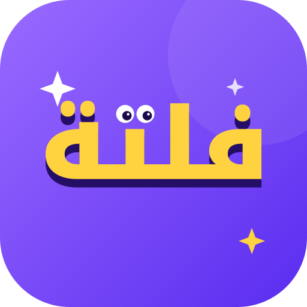

<!doctype html>
<html lang="ar" dir="rtl">
<head>
<meta charset="utf-8">
<meta name="viewport" content="width=device-width, initial-scale=1, viewport-fit=cover">
<title>فلتة | لعبة الأسئلة والصور والألغاز</title>
<meta name="description" content="لعبة أسئلة وألغاز بالمصري: حوالي ٨٥٠ سؤال في ٣٦ تصنيف، فيها أعلام ومعالم بالصور، ولعب أونلاين مع صحابك كل واحد من موبايله">
<link rel="manifest" href="manifest.json">
<meta name="theme-color" content="#0b0b12">
<meta name="mobile-web-app-capable" content="yes">
<meta name="apple-mobile-web-app-capable" content="yes">
<meta name="apple-mobile-web-app-status-bar-style" content="black-translucent">
<meta name="apple-mobile-web-app-title" content="فلتة">
<link rel="apple-touch-icon" href="icon.svg">
<link rel="icon" type="image/svg+xml" href="icon.svg">
<style>
html,body{margin:0;min-height:100%;background:#0f1226}
.lg{--bg:#0f1226;--card:#1b1f3b;--card2:#252a52;--ac:#ffb703;--ac2:#fb5607;--ok:#2ecc71;--bad:#ef476f;--tx:#f4f4fb;--mut:#a9aed0;background:radial-gradient(1200px 600px at 50% -10%,#2b2f6b,#0f1226);color:#f4f4fb;font-family:system-ui,-apple-system,"Segoe UI",Tahoma,"Noto Naskh Arabic",sans-serif;border-radius:18px;padding:6px;min-height:80vh;direction:rtl}
.lg *{box-sizing:border-box;-webkit-tap-highlight-color:transparent}
.lg .lg-app{max-width:560px;margin:0 auto;padding:10px 8px 30px}
.lg .top{display:flex;justify-content:space-between;align-items:center;margin-bottom:10px}
.lg .logo{font-size:28px;font-weight:900;color:var(--ac)}
.lg .logo span{color:var(--ac2)}
.lg .icon{background:var(--card);border:0;color:var(--tx);width:42px;height:42px;border-radius:12px;font-size:18px;cursor:pointer}
.lg .hero{text-align:center;margin:10px 0 18px}
.lg .hero h1{font-size:22px;line-height:1.5;margin:6px 0}
.lg .hero p{color:var(--mut);margin:4px 0}
.lg .pill{display:inline-block;background:var(--card);padding:6px 14px;border-radius:99px;margin-top:8px}
.lg .cards{display:grid;gap:12px}
.lg .mode{background:linear-gradient(135deg,var(--card),var(--card2));border:2px solid transparent;color:var(--tx);text-align:right;padding:18px;border-radius:18px;cursor:pointer;font:inherit;display:flex;flex-direction:column;gap:6px}
.lg .mode:active,.lg .mode:hover{border-color:var(--ac)}
.lg .mode b{font-size:20px}
.lg .mode small{color:var(--mut);font-size:14px;line-height:1.6}
.lg .foot{text-align:center;color:var(--mut);margin-top:18px;font-size:14px}
.lg .link{background:none;border:0;color:var(--ac);font:inherit;cursor:pointer;text-decoration:underline}
.lg .panel{background:var(--card);padding:18px;border-radius:18px;margin-top:8px}
.lg .panel h2{margin:0 0 8px}
.lg .panel h3{margin:16px 0 8px;color:var(--mut);font-size:15px}
.lg .panel p{line-height:1.8}
.lg .center{text-align:center}
.lg .big-emoji{font-size:54px}
.lg .pl{display:grid;grid-template-columns:1fr 1fr;gap:8px}
.lg input{width:100%;padding:12px;border-radius:12px;border:2px solid var(--card2);background:var(--bg);color:var(--tx);font:inherit;font-size:17px}
.lg input:focus{outline:none;border-color:var(--ac)}
.lg .lg-row{display:flex;gap:8px;margin:10px 0;flex-wrap:wrap;justify-content:center}
.lg .chips{display:flex;flex-wrap:wrap;gap:8px}
.lg .chip{background:var(--card2);color:var(--tx);border:2px solid transparent;border-radius:99px;padding:8px 14px;font:inherit;cursor:pointer}
.lg .chip.on{border-color:var(--ac);background:#3a3470}
.lg .btn{background:linear-gradient(135deg,var(--ac),var(--ac2));color:#1a1030;border:0;font:inherit;font-weight:800;padding:12px 18px;border-radius:14px;cursor:pointer;font-size:16px}
.lg .btn.big{width:100%;margin-top:16px;padding:15px;font-size:18px}
.lg .btn.sm{padding:9px 14px;font-size:14px}
.lg .btn.ghost{background:var(--card2);color:var(--tx)}
.lg .btn:disabled,.lg .chip:disabled{opacity:.35;cursor:not-allowed}
.lg .panel .btn.ghost{margin-top:8px;width:100%}
.lg .sb{display:flex;gap:6px;overflow-x:auto;margin-bottom:8px}
.lg .sp{flex:1;min-width:70px;background:var(--card);border-radius:12px;padding:6px 10px;display:flex;justify-content:space-between;gap:6px;font-size:14px;border:2px solid transparent}
.lg .sp.cur{border-color:var(--ac)}
.lg .sp b{color:var(--ac)}
.lg .qmeta{display:flex;justify-content:space-between;color:var(--mut);font-size:14px;margin:8px 2px}
.lg .bar{height:10px;background:var(--card);border-radius:99px;overflow:hidden}
.lg .bar i{display:block;height:100%;width:100%;background:var(--ok);transition:width .1s linear}
.lg .bar i.low{background:var(--bad)}
.lg .q{font-size:22px;font-weight:800;line-height:1.7;background:var(--card);padding:18px;border-radius:18px;margin:12px 0;text-align:center}
.lg .opts{display:grid;gap:10px}
.lg .opt{background:var(--card2);border:2px solid transparent;color:var(--tx);padding:14px;border-radius:14px;font:inherit;font-size:18px;text-align:center;cursor:pointer;display:flex;flex-direction:column;gap:4px}
.lg .opt small{color:var(--mut);font-size:13px}
.lg .opt:active:not(:disabled){border-color:var(--ac)}
.lg .opt.gone{opacity:.15}
.lg .opt:disabled{cursor:not-allowed}
.lg .opt.right{background:#14532d;border-color:var(--ok)}
.lg .opt.wrong{background:#6b1a2e;border-color:var(--bad)}
.lg .res{padding:12px;border-radius:12px;text-align:center;margin-top:12px;font-weight:700}
.lg .res.good{background:#14532d}
.lg .res.bad{background:#6b1a2e}
.lg .ans{display:flex;gap:8px;margin-top:6px}
.lg .ans .btn{white-space:nowrap}
.lg .hint{background:#3a3470;padding:10px;border-radius:12px;text-align:center;margin-bottom:8px}
.lg .warn{color:var(--ac);text-align:center;min-height:24px;margin-top:6px}
.lg .rank{margin:12px 0}
.lg .rk{display:flex;justify-content:space-between;gap:8px;background:var(--card2);padding:10px 12px;border-radius:12px;margin-bottom:6px;font-size:15px}
.lg .big-emoji{line-height:1.3;margin-bottom:10px}
.lg .code{font-size:46px;font-weight:900;letter-spacing:10px;color:var(--ac);direction:ltr;margin:4px 0}
.lg .opt.picked{border-color:var(--ac);background:#3a3470}
.lg .res.wait{background:var(--card2);color:var(--mut)}
.lg .opt small{display:block}
.lg{border-radius:0;min-height:100vh;min-height:100dvh}
</style>
<link rel="preconnect" href="https://fonts.googleapis.com"><link rel="preconnect" href="https://fonts.gstatic.com" crossorigin><link rel="stylesheet" href="https://fonts.googleapis.com/css2?family=Cairo:wght@500;700;800;900&display=swap"><link rel="stylesheet" href="theme.css?v=12"><script src="flags1.js?v=13"></script><script src="flags2.js?v=13"></script><script src="flags3.js?v=13"></script><script src="qx.js?v=13"></script><script src="qb2a.js?v=13"></script><script src="qb3a.js?v=13"></script><script src="qb4a.js?v=13"></script><script src="qb5a.js?v=13"></script><script src="qb1a.js?v=13"></script><script src="qb1b.js?v=13"></script><script src="qb1c.js?v=13"></script>
</head>
<body>
<div class="lg" dir="rtl"><div id="app" class="lg-app"></div></div>
<script>
// @ts-nocheck
// Extra categories. Row: [difficulty 1-3, question, right, wrong1, wrong2, wrong3]
const CATS2={cap:'🏙️ عواصم',cn:'🗺️ دول',fb:'⚽ كورة',hl:'🩺 صحة وطب',md:'📺 إعلام',an:'🐾 حيوانات',sp:'🚀 فضاء',fd:'🍽️ أكل ومشروبات',ct:'🏷️ ماركات وشركات',mt:'➗ رياضيات',is:'🕌 ثقافة إسلامية',mv:'🎬 أفلام ومسلسلات',ms:'🎵 موسيقى وفن'};
const D2x={
cap:[
[1,'ما هي عاصمة فرنسا؟','باريس','ليون','مرسيليا','نيس'],
[1,'ما هي عاصمة السعودية؟','الرياض','جدة','مكة المكرمة','الدمام'],
[1,'ما هي عاصمة إيطاليا؟','روما','ميلانو','نابولي','فلورنسا'],
[1,'ما هي عاصمة اليابان؟','طوكيو','أوساكا','كيوتو','هيروشيما'],
[1,'ما هي عاصمة بريطانيا؟','لندن','مانشستر','ليفربول','برمنجهام'],
[1,'ما هي عاصمة ألمانيا؟','برلين','ميونخ','هامبورج','فرانكفورت'],
[1,'ما هي عاصمة إسبانيا؟','مدريد','برشلونة','إشبيلية','فالنسيا'],
[2,'ما هي عاصمة تركيا؟','أنقرة','إسطنبول','إزمير','بورصة'],
[2,'ما هي عاصمة المغرب؟','الرباط','الدار البيضاء','مراكش','فاس'],
[2,'ما هي عاصمة أستراليا؟','كانبرا','سيدني','ملبورن','بيرث'],
[2,'ما هي عاصمة كندا؟','أوتاوا','تورونتو','مونتريال','فانكوفر'],
[2,'ما هي عاصمة البرازيل؟','برازيليا','ريو دي جانيرو','ساو باولو','سلفادور'],
[2,'ما هي عاصمة السودان؟','الخرطوم','أم درمان','بورتسودان','كسلا'],
[2,'ما هي عاصمة الإمارات؟','أبوظبي','دبي','الشارقة','العين'],
[2,'ما هي عاصمة سويسرا؟','برن','زيورخ','جنيف','بازل'],
[3,'ما هي عاصمة نيجيريا؟','أبوجا','لاجوس','كانو','إبادان'],
[3,'ما هي عاصمة نيوزيلندا؟','ويلينجتون','أوكلاند','كرايستشيرش','دنيدن'],
[3,'ما هي عاصمة باكستان؟','إسلام آباد','كراتشي','لاهور','بيشاور'],
[3,'ما هي عاصمة فيتنام؟','هانوي','هو تشي منه','دا نانج','هوي'],
[3,'ما هي عاصمة تنزانيا الرسمية؟','دودوما','دار السلام','زنجبار','أروشا'],
],
cn:[
[1,'ما هي أكبر دولة في العالم من حيث المساحة؟','روسيا','الصين','كندا','أمريكا'],
[1,'في أي دولة يقع برج إيفل؟','فرنسا','إيطاليا','بلجيكا','إسبانيا'],
[1,'في أي دولة يقع برج بيزا المائل؟','إيطاليا','فرنسا','إسبانيا','اليونان'],
[1,'في أي دولة تقع مدينة إسطنبول؟','تركيا','اليونان','بلغاريا','روسيا'],
[1,'أي دولة تشتهر بكرنفال ريو؟','البرازيل','الأرجنتين','المكسيك','كولومبيا'],
[2,'أي دولة تُلقّب بأرض الشمس المشرقة؟','اليابان','الصين','كوريا الجنوبية','تايلاند'],
[2,'أي دولة تُلقّب بأرض الأرز؟','لبنان','سوريا','الأردن','فلسطين'],
[2,'أي دولة تُلقّب بأرض المليون شهيد؟','الجزائر','ليبيا','تونس','المغرب'],
[2,'ما هي أصغر دولة في العالم من حيث المساحة؟','الفاتيكان','موناكو','سان مارينو','ليختنشتاين'],
[2,'كم عدد الدول الأعضاء في جامعة الدول العربية؟','22','20','18','25'],
[2,'أي دولة عربية تطل على المحيط الأطلسي؟','المغرب','تونس','ليبيا','الأردن'],
[2,'أي دولة هي الأكثر سكانًا في أفريقيا؟','نيجيريا','مصر','إثيوبيا','جنوب أفريقيا'],
[3,'أي دولة تضم أكبر عدد من الجزر في العالم؟','السويد','إندونيسيا','الفلبين','اليابان'],
[3,'أي من هذه الدول ليس لها أي سواحل بحرية؟','سويسرا','إيطاليا','اليونان','هولندا'],
[3,'أي دولة أفريقية اشتهرت بمقاومة الاستعمار الأوروبي ولم تُحتل إلا لفترة قصيرة؟','إثيوبيا','كينيا','الكونغو','أنجولا'],
],
fb:[
[1,'في أي دولة أقيم كأس العالم 2022؟','قطر','روسيا','البرازيل','ألمانيا'],
[1,'من فاز بكأس العالم 2022؟','الأرجنتين','فرنسا','كرواتيا','المغرب'],
[1,'كم عدد لاعبي كل فريق داخل الملعب؟','11','10','12','9'],
[1,'ما هو النادي الأكثر فوزًا بدوري أبطال أوروبا؟','ريال مدريد','برشلونة','ميلان','بايرن ميونخ'],
[1,'ما اسم ملعب نادي برشلونة؟','كامب نو','سانتياجو برنابيو','أنفيلد','أولد ترافورد'],
[1,'ما هو النادي الأكثر تتويجًا بالدوري المصري؟','الأهلي','الزمالك','الإسماعيلي','المصري'],
[1,'في أي نادٍ لعب محمد صلاح قبل ليفربول مباشرة؟','روما','تشيلسي','فيورنتينا','بازل'],
[2,'من هو الهداف التاريخي لبطولات كأس العالم؟','ميروسلاف كلوزه','رونالدو البرازيلي','ليونيل ميسي','بيليه'],
[2,'كم مرة فاز منتخب البرازيل بكأس العالم؟','5','4','3','6'],
[2,'كم مرة فاز منتخب مصر بكأس أمم أفريقيا؟','7','5','6','8'],
[2,'ما الدولة التي نظمت كأس العالم 2018؟','روسيا','ألمانيا','جنوب أفريقيا','فرنسا'],
[2,'في أي دولة أُقيمت أول بطولة لكأس العالم؟','أوروجواي','إيطاليا','فرنسا','البرازيل'],
[2,'من هو اللاعب الأكثر فوزًا بالكرة الذهبية؟','ليونيل ميسي','كريستيانو رونالدو','ميشيل بلاتيني','يوهان كرويف'],
[2,'أي منتخب عربي وصل إلى نصف نهائي كأس العالم 2022؟','المغرب','السعودية','تونس','قطر'],
[3,'من فاز بكأس العالم 2010؟','إسبانيا','هولندا','ألمانيا','أوروجواي'],
[3,'ما اسم الملعب الذي أقيم فيه نهائي كأس العالم 2022؟','لوسيل','البيت','الثمامة','خليفة الدولي'],
[3,'من هو المدرب الذي قاد مصر للتتويج بأمم أفريقيا 2006 و2008 و2010؟','حسن شحاتة','محمود الجوهري','حسام البدري','هيكتور كوبر'],
],
hl:[
[1,'ما هو أكبر عضو في جسم الإنسان؟','الجلد','الكبد','الرئتان','القلب'],
[1,'أي فيتامين يحصل عليه الجسم من الشمس؟','فيتامين د','فيتامين أ','فيتامين ج','فيتامين ب12'],
[1,'أي عضو يضخ الدم في الجسم؟','القلب','الكبد','الكلى','الرئة'],
[1,'كم عدد أسنان الإنسان البالغ؟','32','28','36','30'],
[1,'كم ساعة نوم يحتاجها البالغ تقريبًا في اليوم؟','من 7 إلى 9 ساعات','من 3 إلى 4 ساعات','11 إلى 12 ساعة','5 ساعات'],
[2,'نقص أي فيتامين يسبب الإسقربوط؟','فيتامين ج','فيتامين د','فيتامين أ','فيتامين ك'],
[2,'نقص فيتامين د عند الأطفال يسبب مرض؟','الكساح','الإسقربوط','البلاجرا','البري بري'],
[2,'أي عضو ينتج هرمون الإنسولين؟','البنكرياس','الكبد','الكلى','المعدة'],
[2,'ما هي درجة حرارة جسم الإنسان الطبيعية تقريبًا؟','37 درجة مئوية','35 درجة مئوية','39 درجة مئوية','40 درجة مئوية'],
[2,'نقص الإنسولين أو مقاومته يسبب مرض؟','السكري','الضغط','الربو','الأنيميا'],
[2,'أي معدن يحتاجه الجسم لبناء العظام والأسنان؟','الكالسيوم','الصوديوم','اليود','النحاس'],
[2,'كم عدد فصائل الدم الرئيسية في نظام ABO؟','4','3','5','8'],
[2,'المضادات الحيوية فعّالة ضد؟','البكتيريا','الفيروسات','الحساسية','السكري'],
[3,'أين توجد أصغر عظمة في جسم الإنسان؟','الأذن','الأصبع','الأنف','القدم'],
[3,'ما هي أطول عظمة في جسم الإنسان؟','عظمة الفخذ','عظمة الساق','عظمة العضد','العمود الفقري'],
[3,'أي خلايا في الدم تنقل الأكسجين؟','خلايا الدم الحمراء','الصفائح الدموية','خلايا الدم البيضاء','البلازما'],
[3,'من اكتشف البنسلين؟','ألكسندر فليمنج','لويس باستور','ألبرت أينشتاين','إدوارد جينر'],
[3,'فيروس الإيدز (HIV) يهاجم؟','الجهاز المناعي','الكبد','الرئتين','الكلى'],
],
md:[
[1,'أي شركة تملك فيسبوك وإنستجرام وواتساب؟','ميتا','جوجل','مايكروسوفت','أمازون'],
[1,'أين يقع المقر الرئيسي لقناة الجزيرة؟','قطر','الإمارات','السعودية','مصر'],
[1,'من مؤسس فيسبوك؟','مارك زوكربيرج','بيل جيتس','إيلون ماسك','جاك دورسي'],
[1,'أي منصة فيديو تملكها جوجل؟','يوتيوب','نتفليكس','فيميو','ديلي موشن'],
[2,'مسلسل "لعبة الحبار" من إنتاج أي بلد؟','كوريا الجنوبية','اليابان','الصين','أمريكا'],
[2,'أي منصة بثّت مسلسل Stranger Things؟','نتفليكس','ديزني بلس','HBO','أمازون برايم'],
[2,'أي منصة للفيديوهات القصيرة تملكها شركة بايت دانس؟','تيك توك','سناب شات','إنستجرام','يوتيوب'],
[2,'ما الاسم الجديد الذي أصبح عليه تويتر؟','إكس X','ثريدز','بلو سكاي','ميتا'],
[2,'ما اسم الرمز # عند استخدامه على السوشيال ميديا؟','هاشتاج','منشن','تاج','لايك'],
[2,'أين يُقام مهرجان كان السينمائي؟','فرنسا','إيطاليا','ألمانيا','أمريكا'],
[2,'في أي مدينة تُقام جوائز الأوسكار؟','لوس أنجلوس','لندن','باريس','تورونتو'],
[3,'في أي مدينة تأسست جريدة الأهرام؟','الإسكندرية','القاهرة','طنطا','المنصورة'],
[3,'في أي عام بدأ البث التلفزيوني المصري؟','1960','1952','1970','1981'],
[3,'في أي عام أُقيم مهرجان القاهرة السينمائي الدولي لأول مرة؟','1976','1960','1990','2000'],
],
an:[
[1,'ما هو أسرع حيوان بري؟','الفهد','الأسد','الحصان','النمر'],
[1,'ما هو أكبر حيوان في العالم؟','الحوت الأزرق','الفيل','الزرافة','القرش الحوتي'],
[1,'ما هو أطول حيوان في العالم؟','الزرافة','الفيل','النعامة','الجمل'],
[1,'كم عدد أرجل العنكبوت؟','8','6','10','4'],
[1,'ما اسم صغير الكلب؟','جرو','مهر','حمل','عجل'],
[2,'أي حيوان يخزن الدهون في سنامه؟','الجمل','الحصان','الثعلب','الغزال'],
[2,'الدلفين من فئة؟','الثدييات','الأسماك','الزواحف','البرمائيات'],
[2,'ما هو أكبر طائر في العالم؟','النعامة','النسر','البطريق','الإوز'],
[2,'أي حيوان ينام معلقًا برأسه لأسفل؟','الخفاش','البومة','السنجاب','القرد'],
[2,'أي حيوان معروف بتغيير لونه للتمويه؟','الحرباء','القنفذ','السلحفاة','الضفدع'],
[3,'كم عدد قلوب الأخطبوط؟','3','1','2','8'],
[3,'أي من هذه الحيوانات من الثدييات لكنه يبيض؟','منقار البط (البلاتيبوس)','الخفاش','الدلفين','الأرنب'],
[3,'ما هو أسرع طائر في الغوص؟','الصقر الشاهين','النسر','الببغاء','البجع'],
],
sp:[
[1,'ما هو أقرب كوكب إلى الشمس؟','عطارد','الزهرة','المريخ','الأرض'],
[1,'أي كوكب يُعرف بالكوكب الأحمر؟','المريخ','المشتري','زحل','عطارد'],
[1,'ما هو أكبر كوكب في المجموعة الشمسية؟','المشتري','زحل','نبتون','الأرض'],
[1,'كم عدد كواكب المجموعة الشمسية؟','8','9','7','10'],
[2,'من أول إنسان وصل إلى سطح القمر؟','نيل أرمسترونج','يوري جاجارين','باز ألدرين','جون جلين'],
[2,'من أول إنسان في الفضاء؟','يوري جاجارين','نيل أرمسترونج','أليكسي ليونوف','ألان شيبرد'],
[2,'ما اسم أول قمر صناعي أُطلق إلى الفضاء؟','سبوتنيك','أبولو','فوياجر','هابل'],
[2,'ما اسم المجرة التي توجد فيها الأرض؟','درب التبانة','أندروميدا','المثلث','الدوامة'],
[2,'ما هو الكوكب الأبعد عن الشمس في المجموعة الشمسية؟','نبتون','أورانوس','زحل','المشتري'],
[3,'السنة الضوئية وحدة قياس؟','المسافة','الزمن','السرعة','الكتلة'],
[3,'كم تستغرق أشعة الشمس تقريبًا للوصول إلى الأرض؟','8 دقائق','8 ثوانٍ','8 ساعات','30 دقيقة'],
[3,'ما هو أكبر قمر في المجموعة الشمسية؟','جانيميد','تيتان','القمر','كاليستو'],
],
fd:[
[1,'من أي مادة تُصنع الطحينة؟','السمسم','الفول السوداني','الحمص','اللوز'],
[1,'أي مما يلي ليس من مكونات الكشري التقليدية؟','الدجاج','الأرز','العدس','الحمص'],
[1,'الطعمية المصرية تُصنع غالبًا من؟','الفول','الحمص','العدس','البطاطس'],
[1,'ما هو البلد الأصلي للبيتزا؟','إيطاليا','فرنسا','تركيا','أمريكا'],
[1,'ما هو البلد الأصلي للسوشي؟','اليابان','الصين','كوريا','تايلاند'],
[2,'ما هي أغلى التوابل سعرًا في العالم؟','الزعفران','الكمون','الكركم','القرفة'],
[2,'من أي نبات يُصنع الشوكولاتة؟','الكاكاو','البن','الشاي','قصب السكر'],
[2,'أي فاكهة تحتوي على كمية كبيرة من فيتامين ج؟','البرتقال','التفاح','الموز','العنب'],
[2,'البقلاوة تُحشى غالبًا بـ؟','المكسرات','الشوكولاتة','الكريمة','الفواكه'],
[3,'أين يُعتقد أن أصل القهوة؟','إثيوبيا','البرازيل','اليمن','كولومبيا'],
[3,'أي دولة تشتهر بطبق الكيمتشي؟','كوريا','اليابان','الصين','فيتنام'],
],
ct:[
[1,'أي سيارة شعارها حصان جامح على خلفية صفراء؟','فيراري','بورش','فورد موستانج','لامبورجيني'],
[1,'أي سيارة شعارها ثور؟','لامبورجيني','فيراري','بي إم دبليو','أودي'],
[1,'أي شركة تصنع هاتف آيفون؟','أبل','سامسونج','هواوي','شاومي'],
[1,'أي شركة تصنع هواتف جالاكسي؟','سامسونج','إل جي','سوني','نوكيا'],
[1,'تويوتا شركة سيارات من أي دولة؟','اليابان','كوريا','ألمانيا','الصين'],
[2,'بي إم دبليو شركة سيارات من أي دولة؟','ألمانيا','اليابان','إيطاليا','أمريكا'],
[2,'من مؤسس شركة أمازون؟','جيف بيزوس','إيلون ماسك','بيل جيتس','ستيف جوبز'],
[2,'أي شركة تصنع جهاز بلاي ستيشن؟','سوني','مايكروسوفت','نينتندو','سيجا'],
[2,'أي شركة تصنع سيارة موديل 3 وموديل S؟','تسلا','فورد','هيونداي','نيسان'],
[2,'كوكاكولا شركة من أي بلد؟','أمريكا','بريطانيا','ألمانيا','فرنسا'],
[3,'من أسس شركة أبل مع ستيف جوبز؟','ستيف ووزنياك','بيل جيتس','لاري بيج','مارك زوكربيرج'],
[3,'أي سيارة شعارها أربع حلقات متداخلة؟','أودي','بي إم دبليو','مازدا','سوبارو'],
],
mt:[
[1,'ما ناتج 7 × 8؟','56','54','48','64'],
[1,'ما هو الجذر التربيعي للعدد 144؟','12','14','11','13'],
[1,'كم عدد أضلاع المسدس؟','6','5','8','7'],
[2,'ما قيمة π تقريبًا؟','3.14','2.17','3.41','4.13'],
[2,'ما مجموع زوايا المثلث؟','180 درجة','90 درجة','360 درجة','270 درجة'],
[2,'كم تساوي 15% من 200؟','30','20','25','35'],
[2,'كم يساوي 2 أس 10؟','1024','512','2048','1000'],
[2,'ما العدد التالي في المتتالية 2, 4, 8, 16؟','32','24','30','36'],
[2,'ما هو أول عدد أولي؟','2','1','3','0'],
[3,'كم يساوي 1000 ÷ 8؟','125','120','150','128'],
],
is:[
[1,'كم عدد أركان الإسلام؟','5','4','6','7'],
[1,'كم عدد سور القرآن الكريم؟','114','110','120','100'],
[1,'ما هي أطول سورة في القرآن؟','البقرة','آل عمران','النساء','المائدة'],
[1,'أي سورة تُسمى أم الكتاب؟','الفاتحة','البقرة','الإخلاص','يس'],
[1,'في أي شهر هجري يصوم المسلمون؟','رمضان','شعبان','محرم','رجب'],
[2,'كم عدد ركعات صلاة الفجر؟','2','3','4','1'],
[2,'من هو أول الخلفاء الراشدين؟','أبو بكر الصديق','عمر بن الخطاب','عثمان بن عفان','علي بن أبي طالب'],
[2,'في أي سنة هجرية وقعت غزوة بدر؟','الثانية','الأولى','الثالثة','الخامسة'],
[2,'الجامع الأزهر بُني في عهد أي دولة؟','الفاطمية','الأيوبية','المملوكية','العثمانية'],
[3,'ما هو أول مسجد بُني في الإسلام؟','مسجد قباء','المسجد النبوي','المسجد الأقصى','المسجد الحرام'],
],
mv:[
[1,'من مخرج فيلم تيتانيك؟','جيمس كاميرون','ستيفن سبيلبرج','كريستوفر نولان','ريدلي سكوت'],
[1,'من بطل فيلم الإرهاب والكباب؟','عادل إمام','أحمد زكي','أحمد حلمي','محمد هنيدي'],
[2,'جاك سبارو شخصية من أي سلسلة أفلام؟','قراصنة الكاريبي','الهوبيت','ماتريكس','ثور'],
[2,'من الممثل الذي لعب دور آيرون مان؟','روبرت داوني جونيور','كريس إيفانز','كريس هيمسورث','مارك روفالو'],
[2,'ما اسم الأسد الصغير في فيلم الأسد الملك؟','سيمبا','موفاسا','سكار','تيمون'],
[2,'من مخرج سلسلة أفلام العراب؟','فرانسيس فورد كوبولا','مارتن سكورسيزي','كوينتن تارانتينو','ألفريد هيتشكوك'],
[2,'أي من هذه الشخصيات من إنتاج ديزني؟','ميكي ماوس','سبونج بوب','توم وجيري','بوكيمون'],
[2,'أنمي ناروتو من إنتاج أي بلد؟','اليابان','كوريا','الصين','أمريكا'],
[2,'من كاتب مسلسل ليالي الحلمية؟','أسامة أنور عكاشة','وحيد حامد','مصطفى محرم','لينين الرملي'],
],
ms:[
[1,'من يُلقب بملك البوب؟','مايكل جاكسون','إلفيس بريسلي','برنس','جاستن بيبر'],
[1,'كم عدد أوتار الجيتار الكلاسيكي؟','6','4','5','8'],
[1,'آلة العود من الآلات؟','الوترية','الهوائية','الإيقاعية','الكهربائية'],
[2,'من يُلقب بملك الروك أند رول؟','إلفيس بريسلي','مايكل جاكسون','بوب مارلي','جون لينون'],
[2,'فرقة البيتلز جاءت من أي بلد؟','بريطانيا','أمريكا','ألمانيا','أستراليا'],
[2,'من مؤلف السيمفونية التاسعة؟','بيتهوفن','موتسارت','باخ','تشايكوفسكي'],
[2,'كم عدد مفاتيح البيانو القياسي؟','88','66','76','100'],
[3,'من رسم لوحة الليلة المرصعة بالنجوم؟','فان جوخ','مونيه','دالي','رامبرانت'],
[3,'بماذا لُقّب الموسيقار محمد عبد الوهاب؟','موسيقار الأجيال','الكروان','الأستاذ','الموسيقار الأول'],
],
};
const Q2=Object.entries(D2x).flatMap(([c,rows])=>rows.map(r=>[c,...r]));

;
// @ts-nocheck
// Bank v3: new categories + expansions. Row: [difficulty 1-3, question, right, wrong1, wrong2, wrong3]
const CATS3={pp:'👤 شخصيات وأعلام',car:'🚗 سيارات',lm:'🗿 معالم سياحية',la:'📖 لغة وأدب',inv:'💡 اختراعات',soc:'📱 سوشيال ميديا',am:'🗣️ أمثال شعبية',ol:'🏅 أولمبياد ورياضات',fl:'🚩 أعلام الدول',cu:'💰 عملات',wt:'🌦️ طقس وطبيعة'};
const D3x={
pp:[
[1,'من هو مؤسس موقع فيسبوك؟','مارك زوكربيرغ','إيلون ماسك','جيف بيزوس','بيل غيتس'],
[1,'من الرسام الشهير الذي قُطعت أذنه؟','فينسنت فان جوخ','بيكاسو','مونيه','دالي'],
[1,'من هي أول امرأة تفوز بجائزة نوبل؟','ماري كوري','أم كلثوم','مارغريت تاتشر','الأم تيريزا'],
[1,'من هو المحقق الخيالي الأشهر في روايات كونان دويل؟','شيرلوك هولمز','هرقل بوارو','جيمس بوند','باتمان'],
[1,'من العالم المرتبط بقصة التفاحة وقانون الجاذبية؟','إسحاق نيوتن','أينشتاين','جاليليو','أرخميدس'],
[1,'من الفنان الملقب بـ"الهضبة"؟','عمرو دياب','محمد منير','تامر حسني','هاني شاكر'],
[1,'من لاعب الكرة الملقب بـ"البرغوث"؟','ليونيل ميسي','كريستيانو رونالدو','نيمار','محمد صلاح'],
[1,'من هو مقدم برنامج "خواطر"؟','أحمد الشقيري','معتز مطر','عمرو خالد','باسم يوسف'],
[2,'من هو أول رائد فضاء عربي؟','سلطان بن سلمان','هزاع المنصوري','محمد فارس','عيسى آل خليفة'],
[2,'من هو مؤسس شركة أمازون؟','جيف بيزوس','إيلون ماسك','بيل غيتس','لاري بيج'],
[2,'من هو صاحب المقولة الفلسفية "أنا أفكر إذن أنا موجود"؟','رينيه ديكارت','أفلاطون','أرسطو','كانط'],
[2,'العالم المصري فاروق الباز اشتهر في أي مجال؟','علوم الفضاء مع ناسا','الجراحة','الفيزياء النووية','الكيمياء'],
[2,'من مؤلف رواية "1984"؟','جورج أورويل','دوستويفسكي','نجيب محفوظ','همنغواي'],
[2,'من هو أول مصري يتسلق قمة إيفرست؟','عمر سمرة','أحمد زويل','مجدي يعقوب','محمد منير'],
[2,'من مؤلف الموسيقى التصويرية لأفلام حرب النجوم؟','جون ويليامز','هانز زيمر','إنيو موريكوني','داني إلفمان'],
[3,'من اكتشف الأشعة السينية (أشعة إكس)؟','فيلهلم رونتغن','ماري كوري','أينشتاين','إديسون'],
[3,'من أول امرأة طارت منفردة عبر المحيط الأطلسي؟','أميليا إيرهارت','فالنتينا تيريشكوفا','ماري كوري','كوكي'],
[3,'من هو مؤسس جائزة نوبل؟','ألفريد نوبل','ماري كوري','إديسون','رذرفورد'],
[3,'من هو الطبيب المصري العالمي في جراحات القلب؟','مجدي يعقوب','أحمد زويل','فاروق الباز','محمد غنيم'],
[3,'من هي العالمة المصرية الرائدة في الفيزياء النووية؟','سميرة موسى','هدى شعراوي','ليلى سويف','نفيسة العلايلي'],
],
car:[
[1,'شركة تويوتا من أي بلد؟','اليابان','كوريا الجنوبية','الصين','ألمانيا'],
[1,'سيارات مرسيدس وبي إم دبليو من أي بلد؟','ألمانيا','إيطاليا','فرنسا','بريطانيا'],
[1,'أي حيوان على شعار سيارات فيراري؟','حصان','ثور','أسد','نسر'],
[1,'سيارة "كورولا" من إنتاج أي شركة؟','تويوتا','هوندا','هيونداي','نيسان'],
[1,'ما اللون الأشهر لسيارات فيراري؟','الأحمر','الأصفر','الأسود','الأزرق'],
[1,'شركة هيونداي من أي بلد؟','كوريا الجنوبية','اليابان','الصين','الهند'],
[2,'سيارة "باترول" من إنتاج أي شركة؟','نيسان','تويوتا','ميتسوبيشي','فورد'],
[2,'من مؤسس شركة فورد للسيارات؟','هنري فورد','كارل بنز','إيلون ماسك','إنزو فيراري'],
[2,'ما اسم أول سيارة أُنتجت بكميات ضخمة في التاريخ؟','فورد موديل T','فولكس بيتل','مرسيدس S','فيات 500'],
[2,'ما لون العلم الذي يُرفع عند نهاية سباقات الفورمولا 1؟','مرقّط أبيض وأسود','أحمر','أصفر','أخضر'],
[2,'لامبورغيني ومازيراتي من أي بلد؟','إيطاليا','ألمانيا','فرنسا','إنجلترا'],
[2,'شعار BMW الأزرق والأبيض يرمز لأي منطقة ألمانية؟','بافاريا','برلين','هامبورج','سكسونيا'],
[3,'سيارات "سكودا" من أي بلد؟','التشيك','بولندا','المجر','النمسا'],
[3,'ما اسم التمثال الصغير فوق مقدمة سيارات رولز رويس؟','روح النشوة (سبيريت أوف إكستاسي)','الملاك الطائر','النصر المجنح','الحورية'],
[3,'من مخترع أول سيارة تعمل بالبنزين في التاريخ؟','كارل بنز','هنري فورد','غوتليب دايملر','رودولف ديزل'],
],
lm:[
[1,'برج إيفل موجود في أي مدينة؟','باريس','لندن','روما','مدريد'],
[1,'تمثال الحرية موجود في أي مدينة؟','نيويورك','واشنطن','لوس أنجلوس','بوسطن'],
[1,'سور الصين العظيم موجود في أي دولة؟','الصين','اليابان','كوريا','الهند'],
[1,'تاج محل موجود في أي دولة؟','الهند','باكستان','إيران','تركيا'],
[1,'مدرج الكولوسيوم موجود في أي مدينة؟','روما','أثينا','إسطنبول','نابولي'],
[1,'مدينة البتراء الوردية موجودة في أي دولة؟','الأردن','سوريا','لبنان','مصر'],
[1,'تمثال أبو الهول موجود في أي محافظة مصرية؟','الجيزة','القاهرة','الأقصر','أسوان'],
[1,'معبد الكرنك موجود في أي مدينة؟','الأقصر','أسوان','قنا','إدفو'],
[1,'قلعة صلاح الدين الأيوبي موجودة في أي مدينة؟','القاهرة','الإسكندرية','دمشق','القدس'],
[1,'ساعة بيج بن موجودة في أي مدينة؟','لندن','باريس','برلين','جنيف'],
[1,'جسر البوابة الذهبية موجود في أي مدينة أمريكية؟','سان فرانسيسكو','نيويورك','شيكاغو','ميامي'],
[1,'دار الأوبرا الشهيرة بأشرعتها موجودة في أي مدينة؟','سيدني','ملبورن','لندن','كوبنهاجن'],
[1,'برج خليفة موجود في أي إمارة؟','دبي','أبوظبي','الشارقة','عجمان'],
[1,'منطقة خان الخليلي الأثرية موجودة في أي مدينة؟','القاهرة','الإسكندرية','أسيوط','دمشق'],
[2,'آثار ماتشو بيتشو موجودة في أي دولة؟','بيرو','المكسيك','تشيلي','بوليفيا'],
[2,'معبد الأكروبوليس موجود في أي مدينة؟','أثينا','روما','إسطنبول','قبرص'],
[2,'قصر الحمراء موجود في أي بلد؟','إسبانيا','المغرب','تركيا','البرتغال'],
[2,'الهرم المدرج (هرم زوسر) موجود في أي منطقة؟','سقارة','الجيزة','دهشور','أبيدوس'],
[2,'تمثال النبي داود الشهير من نحت أي فنان؟','ميكيلانجيلو','دافنشي','رودان','بيرنيني'],
[2,'حدائق بابل المعلقة كانت موجودة في أي بلد اليوم؟','العراق','إيران','سوريا','مصر'],
[2,'متحف اللوفر موجود في أي مدينة؟','باريس','لندن','مدريد','روما'],
[3,'أهرامات مروي النوبية موجودة في أي دولة؟','السودان','مصر','إثيوبيا','تشاد'],
[3,'معبد أنغكور وات موجود في أي دولة؟','كمبوديا','تايلاند','فيتنام','لاوس'],
[3,'تمثال المسيح الفادي الشهير موجود في أي مدينة؟','ريو دي جانيرو','ساو باولو','بوينس آيرس','ليما'],
[3,'أبراج بتروناس التوأم موجودة في أي دولة؟','ماليزيا','إندونيسيا','سنغافورة','الفلبين'],
],
la:[
[1,'ما جمع كلمة "كتاب"؟','كتب','كتابات','مكاتب','كتّاب'],
[1,'ما مفرد كلمة "صحف"؟','صحيفة','صحاف','صحفة','مصحف'],
[1,'ما ضد كلمة "النور"؟','الظلام','الضياء','الشمس','السراج'],
[1,'ما جمع كلمة "قلم"؟','أقلام','قلمون','مقالم','قلائم'],
[2,'من مؤلف "مقدمة ابن خلدون"؟','عبد الرحمن بن خلدون','الجاحظ','ابن سينا','المسعودي'],
[2,'من مؤلف رواية "البؤساء"؟','فيكتور هوغو','تشارلز ديكنز','تولستوي','بلزاك'],
[2,'من مؤلف "الجريمة والعقاب"؟','فيودور دوستويفسكي','ليو تولستوي','أنطون تشيخوف','غوغول'],
[2,'من مؤلف رواية "أولاد حارتنا"؟','نجيب محفوظ','طه حسين','يوسف إدريس','توفيق الحكيم'],
[2,'من مؤلف "كتاب الحيوان" و"البيان والتبيين"؟','الجاحظ','ابن المقفع','الخليل بن أحمد','سيبويه'],
[2,'من مؤلف "كليلة ودمنة" بالعربية؟','عبد الله بن المقفع','الجاحظ','ابن خلدون','الحريري'],
[2,'من مؤلف رواية "الخيميائي"؟','باولو كويلو','غابرييل ماركيز','خورخي لويس بورخيس','إيزابيل ألليندي'],
[2,'من مؤلف "دون كيخوته"؟','ميغيل دي سيرفانتس','فيكتور هوغو','جوته','دانتي'],
[2,'من صاحب "روباعيات الخيام"؟','عمر الخيام','جلال الدين الرومي','حافظ الشيرازي','سعدي'],
[2,'من مؤلف ملحمتي "الإلياذة" و"الأوديسة"؟','هوميروس','سوفوكليس','أرسطو','فيرجيل'],
[2,'من مؤلف "مئة عام من العزلة"؟','غابرييل غارسيا ماركيز','بابلو نيرودا','ماريو بارغاس يوسا','بورخيس'],
[2,'من مؤلف "العجوز والبحر"؟','إرنست همنغواي','مارك توين','جون شتاينبك','جاك لندن'],
[2,'ما اللغة الرسمية للبرازيل؟','البرتغالية','الإسبانية','الفرنسية','الإنجليزية'],
[2,'كم عدد اللغات الرسمية للأمم المتحدة؟','6','4','8','10'],
[2,'من مؤلف كتاب "البخلاء"؟','الجاحظ','ابن المقفع','التوحيدي','المتنبي'],
[3,'من مؤلف "طوق الحمامة"؟','ابن حزم الأندلسي','ابن رشد','ابن عربي','الغزالي'],
[3,'من مؤلف كتاب "الأغاني" الشهير في الأدب؟','أبو الفرج الأصفهاني','ابن قتيبة','الثعالبي','الصاحب بن عباد'],
[3,'من واضع علم النحو العربي؟','أبو الأسود الدؤلي','سيبويه','الخليل بن أحمد','الكسائي'],
[3,'من مؤلف رواية "الحرب والسلم"؟','ليو تولستوي','دوستويفسكي','بوشكين','تورغينيف'],
[3,'ما أقدم لغة مكتوبة معروفة في التاريخ؟','السومرية','المصرية القديمة','الصينية','الأكدية'],
[3,'من مؤلف كتاب "في الشعر الجاهلي" المثير للجدل؟','طه حسين','العقاد','زكي مبارك','أحمد أمين'],
],
inv:[
[1,'من اخترع المصباح الكهربائي المتوهج؟','توماس إديسون','نيكولا تسلا','نيوتن','أينشتاين'],
[1,'من اخترع الهاتف؟','ألكسندر جراهام بيل','ماركوني','مورس','إديسون'],
[1,'من اخترع الديناميت؟','ألفريد نوبل','روبرت أوبنهايمر','إديسون','باستور'],
[1,'من طيّر أول طائرة أثقل من الهواء؟','الأخوان رايت','أميليا إيرهارت','سانتوس دومون','ليندبرغ'],
[2,'من طور المحرك البخاري بشكله الحديث؟','جيمس واط','ستيفنسون','فولتون','نيوتن'],
[2,'من اكتشف لقاح الجدري؟','إدوارد جينر','لويس باستور','فليمنج','روبرت كوخ'],
[2,'من صاحب أول نظام تلفزيون عملي في عشرينات القرن العشرين؟','جون لوجي بيرد','إديسون','ماركوني','تسلا'],
[2,'أي حضارة قديمة اخترعت الورق؟','الصينية','المصرية','الرومانية','الهندية'],
[2,'من أول من استخدم التلسكوب لرصد السماء؟','جاليليو جاليلي','نيوتن','كبلر','كوبرنيكوس'],
[2,'من صاحب الفضل في علم الجبر واسمه أصل كلمة "خوارزمية"؟','الخوارزمي','ابن الهيثم','جابر بن حيان','البيروني'],
[2,'من مؤلف كتاب "القانون في الطب"؟','ابن سينا','الرازي','ابن النفيس','الزهراوي'],
[2,'من أول من وصف الدورة الدموية الصغرى؟','ابن النفيس','ويليام هارفي','ابن سينا','جالينوس'],
[2,'من اخترع الشفرة التي تحمل اسمه (النقاط والشرطات)؟','صموئيل مورس','بيل','ماركوني','إديسون'],
[2,'من اخترع أول بطارية كهربائية؟','ألساندرو فولتا','أمبير','أوم','فاراداي'],
[3,'من صاحب أول صورة فوتوغرافية في التاريخ؟','نيسيفور نييبس','داجير','إديسون','إيستمان'],
[3,'من مخترع تكييف الهواء الحديث؟','ويليس كاريير','إديسون','فورد','ويستنجهاوس'],
[3,'من وضع أول جدول دوري للعناصر؟','دميتري مندلييف','لافوازييه','دالتون','رذرفورد'],
[3,'حضارة قديمة اخترعت البوصلة والبارود؟','الصينية','الإغريقية','الفرعونية','البابلية'],
],

soc:[
[1,'ما أكبر منصة لمشاركة الفيديو في العالم؟','يوتيوب','فيسبوك','تيك توك','فيميو'],
[1,'أي تطبيق اشتهر بالفيديوهات القصيرة؟','تيك توك','لينكدإن','سكايب','بينترست'],
[1,'تطبيق واتساب تابع لأي شركة؟','ميتا','جوجل','آبل','تويتر'],
[1,'إنستجرام تابع لأي شركة؟','ميتا','جوجل','سناب','X'],
[1,'ما اللون الأساسي في شعار فيسبوك؟','الأزرق','الأحمر','الأخضر','الأسود'],
[1,'لينكدإن منصة متخصصة في إيه؟','العمل والتوظيف','الألعاب','الطبخ','الرياضة'],
[1,'سناب شات اشتهر بإيه؟','الرسائل والصور المختفية','المقالات الطويلة','البودكاست','الخرائط'],
[2,'شركة تيك توك تابعة لأي شركة أم؟','بايت دانس','تينسنت','علي بابا','ميتا'],
[2,'أي منصة اشتهرت ببث الألعاب المباشر؟','تويتش','يوتيوب كيدز','فيسبوك ووتش','ديلي موشن'],
[2,'ريديت اشتهر بإيه؟','المنتديات والمجتمعات','الفيديوهات القصيرة','الموسيقى','التسوق'],
[2,'ما اسم منصة التواصل التي غيّرت اسمها إلى X؟','تويتر','فيسبوك','تيليجرام','ديسكورد'],
[2,'أي شبكة اجتماعية كانت الأشهر قبل صعود فيسبوك؟','ماي سبيس','فريندستر','أوركوت','هاي فايف'],
[3,'من مؤسس موقع ويكيبيديا؟','جيمي ويلز','لاري بيج','مارك زوكربيرغ','جيمي دونالدسون'],
[3,'في أي عام أُطلق يوتيوب؟','2005','2002','2008','2010'],
[3,'من هو صاحب أكبر قناة فردية على يوتيوب حتى 2025؟','MrBeast','بيوديباي','تي-سيريز','لوغان بول'],
],
am:[
[1,'أكمل المثل: "في التأني السلامة وفي..."','العجلة الندامة','الصبر المفاتيح','الكتمان السعادة','السرعة الفرح'],
[1,'أكمل: "الصديق وقت..."','الضيق','الفرح','السفر','الأكل'],
[1,'أكمل: "يد واحدة ما..."','بتصفقش','بتمسكش','بتكتبش','بتشتغلش'],
[1,'أكمل: "الجار قبل..."','الدار','السوق','المدرسة','المسجد'],
[1,'أكمل: "عصفور في اليد خير من..."','عشرة على الشجرة','قفص من دهب','بطة في النيل','حمامة على السطح'],
[2,'أكمل: "خير الكلام ما..."','قل ودل','كثر ومل','طال وشمل','حلو وغنى'],
[2,'أكمل: "من حفر حفرة لأخيه..."','وقع فيها','بناها','سقاها','ردمها'],
[2,'أكمل: "العلم في الصغر كالنقش على..."','الحجر','الورق','الرمل','المية'],
[2,'أكمل: "من راقب الناس مات..."','همًا','جوعًا','عطشًا','نومًا'],
[2,'أكمل: "الوقت كالسيف إن لم تقطعه..."','قطعك','كسرك','رمـاك','خدعك'],
[2,'أكمل: "الباب اللي يجيلك منه الريح..."','سده واستريح','افتحه وانبسط','اقفله واستخبى','كسره وارميه'],
[2,'أكمل: "درهم وقاية خير من..."','قنطار علاج','صندوق ذهب','كنز دفين','مية صدقة'],
[2,'أكمل: "العقل السليم في الجسم..."','السليم','القوي','الكبير','الجميل'],
[3,'أكمل المثل المصري: "اللي ما يعرف الصقر..."','يشويه','يبيعه','يربيه','يطيره'],
[3,'أكمل: "القناعة كنز لا..."','يفنى','يبان','يتباع','يتحسب'],
],
ol:[
[1,'الألعاب الأولمبية الحديثة بتتعمل كل كام سنة؟','4','2','3','5'],
[1,'كم عدد حلقات الشعار الأولمبي؟','5','4','6','7'],
[1,'في أي بلد نشأت الألعاب الأولمبية القديمة؟','اليونان','إيطاليا','مصر','الصين'],
[1,'رياضة التنس الطاولة بتتلعب بـ؟','مضرب صغير وكرة','كرة وقدم','مضرب طويل','صولجان'],
[1,'محمد علي كلاي كان بطل أي رياضة؟','الملاكمة','المصارعة','الجودو','الكيك بوكسينج'],
[2,'في أي مدينة أقيمت أولمبياد 2012؟','لندن','بكين','ريو','أثينا'],
[2,'في أي مدينة أقيمت أولمبياد 2024؟','باريس','لوس أنجلوس','طوكيو','روما'],
[2,'كم عدد لاعبي فريق الكرة الطائرة داخل الملعب؟','6','5','7','9'],
[2,'ما اسم أكبر دوري كرة سلة في العالم؟','NBA','CBA','يوروليغ','FIBA'],
[2,'السباح الأكثر فوزًا بميداليات أولمبية في التاريخ؟','مايكل فيلبس','إيان ثورب','مارك سبيتز','كوسجي'],
[2,'طول سباق الماراثون تقريبًا؟','42 كم','26 كم','50 كم','21 كم'],
[2,'"ذا روك" دواين جونسون اشتهر في أي رياضة قبل التمثيل؟','المصارعة','الملاكمة','كرة القدم الأمريكية','رفع الأثقال'],
[2,'مدة شوط كرة اليد الواحد؟','30 دقيقة','40 دقيقة','25 دقيقة','45 دقيقة'],
[2,'كم قطعة يبدأ بها كل لاعب في الشطرنج؟','16','12','20','14'],
[3,'من المصري الذي فاز بذهبية المصارعة في أولمبياد أثينا 2004 بعد غياب طويل عن الذهب؟','كرام جابر','محمد رشوان','هداية ملاك','إبراهيم مصطفى'],
[3,'في أي مدينة أقيمت أول دورة أولمبية حديثة عام 1896؟','أثينا','باريس','لندن','روما'],
[3,'الكرة الطائرة الشاطئية بتلعب بكام لاعب لكل فريق داخل الملعب؟','2','3','4','5'],
[3,'أي دولة فازت بأكبر عدد من الميداليات في تاريخ الأولمبياد؟','أمريكا','روسيا','الصين','بريطانيا'],
],
fl:[
[1,'علم مصر فيه كام لون؟','3','2','4','5'],
[1,'إيه اللي في نص علم اليابان؟','دائرة حمراء','نجمة','هلال','شمس بأشعة'],
[1,'اللون الأساسي لعلم السعودية؟','الأخضر','الأحمر','الأبيض','الأسود'],
[1,'علم كندا فيه ورقة أي شجرة؟','القيقب (المابل)','البلوط','النخيل','الزيتون'],
[1,'علم تركيا فيه؟','هلال ونجمة','نسر','أسد','صليب'],
[1,'الألوان الأساسية لعلم البرازيل؟','أخضر وأصفر','أحمر وأبيض','أزرق وأصفر','أخضر وأحمر'],
[2,'علم سويسرا شكله إيه؟','صليب أبيض على أحمر','نجمة على أزرق','هلال على أخضر','ثلاثة خطوط'],
[2,'علم أي دولة فيه نجمة خضراء على خلفية حمراء؟','المغرب','تونس','الجزائر','موريتانيا'],
[2,'علم الأردن فيه نجمة كام رأس؟','7','5','6','8'],
[2,'كم عدد النجوم في علم الولايات المتحدة؟','50','48','52','13'],
[2,'إيه اللي في نص علم الهند؟','عجلة زرقاء','أسد','فيل','لوتس'],
[2,'علم إيطاليا ألوانه إيه؟','أخضر وأبيض وأحمر','أزرق وأبيض وأحمر','أصفر وأحمر','أخضر وأصفر'],
[2,'اللون الأساسي لعلم الصين؟','الأحمر','الأصفر','الأخضر','الأزرق'],
[3,'إيه اللي في نص علم الأرجنتين؟','شمس','قمر','نسر','نجمة'],
],
cu:[
[1,'ما عملة مصر؟','الجنيه','الدينار','الريال','الدرهم'],
[1,'ما عملة السعودية؟','الريال','الدينار','الدرهم','الليرة'],
[1,'ما عملة الإمارات؟','الدرهم','الريال','الدينار','الروبية'],
[1,'ما عملة الولايات المتحدة؟','الدولار','اليورو','الجنيه','البيزو'],
[1,'ما العملة الموحدة لمعظم دول أوروبا؟','اليورو','الدولار','الفرنك','الكرونة'],
[2,'ما عملة الصين؟','اليوان','الين','الوون','الرينغيت'],
[2,'ما عملة الكويت؟','الدينار','الريال','الدرهم','الجنيه'],
[2,'ما عملة تركيا؟','الليرة','الدينار','اليورو','الروبل'],
[2,'ما عملة الهند؟','الروبية','التاكا','الروبيل','البات'],
[2,'ما عملة سويسرا؟','الفرنك','اليورو','الدولار','الكرونة'],
[2,'ما عملة روسيا؟','الروبل','اليورو','الهريفنيا','التينغ'],
[2,'ما عملة كوريا الجنوبية؟','الوون','الين','اليوان','الرينغيت'],
[3,'ما عملة جنوب أفريقيا؟','الراند','النايرا','الشلن','البولا'],
[3,'ما عملة نيجيريا؟','النايرا','الراند','السيدي','الشلن'],
[3,'ما عملة الأرجنتين؟','البيزو','الريال','البوليفار','السول'],
],
wt:[
[1,'قوس قزح بيظهر غالبًا بعد إيه؟','المطر','الضباب','العاصفة الرملية','الثلج'],
[1,'ظاهرة كسوف الشمس بتحصل لما إيه يحجب الشمس؟','القمر','سحابة','كوكب المريخ','الأرض'],
[1,'الصحراء الكبرى موجودة في أي قارة؟','أفريقيا','آسيا','أستراليا','أمريكا الجنوبية'],
[1,'الظاهرة اللي بتتحكم في المد والجزر؟','جاذبية القمر','حرارة الشمس','الرياح','براكين البحر'],
[2,'مقياس شدة الزلازل الشهير اسمه؟','مقياس ريختر','مقياس بوفورت','مقياس فهرنهايت','مقياس موهس'],
[2,'الشفق القطبي بيظهر قرب أيه؟','القطبين','خط الاستواء','الصحاري','الجزر'],
[2,'نهر النيل بيصب في أي بحر؟','المتوسط','الأحمر','العربي','الأسود'],
[2,'ما وحدة قياس درجة الحرارة المستخدمة في مصر؟','الدرجة المئوية (سلسيوس)','فهرنهايت','كلفن','رانكين'],
[2,'أعلى شلال في العالم؟','شلالات أنجل','شلالات نياجرا','شلالات فيكتوريا','شلالات إجوازو'],
[3,'البركان اللي دمّر مدينة بومبي الرومانية؟','فيزوف','إتنا','كليمنجارو','سانت هيلين'],
[3,'ما اسم أقوى مقياس لتصنيف الأعاصير المدارية؟','مقياس سافير-سيمبسون','ريختر','بوفورت','فوجيتا'],
[3,'أكبر حاجز مرجاني في العالم موجود قرب أي دولة؟','أستراليا','البرازيل','المالديف','المكسيك'],
],
};
// Expansions for existing categories
const E={
eg:[
[1,'ما أطول نهر في مصر؟','النيل','الفرات','دجلة','الأمازون'],
[1,'مين المطربة صاحبة "إنت عمري"؟','أم كلثوم','فيروز','وردة','شادية'],
[1,'فيلم "الكيف" بطولته من؟','يحيى الفخراني ومحمود عبد العزيز','عادل إمام','أحمد زكي','نور الشريف'],
[2,'ما اسم أكبر ميدان في وسط القاهرة؟','التحرير','رمسيس','العتبة','مصطفى محمود'],
[2,'مدينة الأقصر بتشتهر بأي آثار؟','معابد الكرنك والأقصر','الأهرامات','أبو الهول','القلعة'],
[2,'من كاتب مسرحية "مدرسة المشاغبين"؟','علي سالم','لينين الرملي','نجيب الريحاني','يوسف وهبي'],
[2,'بحيرة ناصر موجودة في أي محافظة؟','أسوان','قنا','سوهاج','الوادي الجديد'],
[2,'أول مترو أنفاق في أفريقيا اتعمل في أي مدينة؟','القاهرة','الإسكندرية','لاجوس','جوهانسبرج'],
[2,'المطرب اللي اتلقب بـ"الكينج"؟','محمد منير','عمرو دياب','علي الحجار','هاني شاكر'],
[3,'من مؤسس الدولة الأيوبية؟','صلاح الدين الأيوبي','نور الدين زنكي','قطز','بيبرس'],
[3,'معركة المنصورة ضد الحملة الصليبية السابعة كانت سنة كام تقريبًا؟','1250','1189','1099','1450'],
[3,'من ملك مصر الذي تنازل عن العرش بعد ثورة يوليو 1952؟','الملك فاروق','الملك فؤاد الأول','الخديوي عباس حلمي','السلطان حسين كامل'],
],
hist:[
[2,'في أي عام كان سقوط الأندلس (غرناطة)؟','1492','1453','1517','1258'],
[2,'من قائد معركة اليرموك من المسلمين؟','خالد بن الوليد','صلاح الدين','عمرو بن العاص','سعد بن أبي وقاص'],
[2,'من هو أول من دار حول العالم في رحلة بحرية (طاقمه)؟','ماجلان','كولومبوس','فاسكو دا غاما','كوك'],
[2,'في أي عام سقطت بغداد بيد المغول؟','1258','1453','1492','1099'],
[2,'الحرب الباردة كانت بين أي دولتين؟','أمريكا والاتحاد السوفيتي','أمريكا والصين','بريطانيا وفرنسا','ألمانيا وروسيا'],
[3,'من مؤسس الدولة العثمانية؟','عثمان الأول','محمد الفاتح','سليم الأول','أرطغرل'],
[3,'في أي معركة توقف التوسع المغولي بيد المماليك؟','عين جالوت','حطين','اليرموك','مرج دابق'],
[3,'متى بدأ الاستكشاف البرتغالي لطريق رأس الرجاء الصالح تقريبًا؟','القرن 15','القرن 12','القرن 17','القرن 19'],
[3,'من هو أول خليفة عباسي؟','السفاح','أبو جعفر المنصور','هارون الرشيد','المأمون'],
[3,'معاهدة وستفاليا أنهت أي حرب؟','حرب الثلاثين عامًا','حرب المئة عام','حرب السبع سنوات','حرب الوردتين'],
],
geo:[
[2,'ما أطول نهر في العالم؟','النيل','الأمازون','اليانغتسي','المسيسيبي'],
[2,'قناة السويس بتوصل بين أي بحرين؟','المتوسط والأحمر','الأحمر والعربي','المتوسط والأسود','الأحمر والميت'],
[2,'أكبر جزيرة في العالم؟','جرينلاند','مدغشقر','بورنيو','أيسلندا'],
[2,'خط الاستواء بيمر بأي دولة أفريقية؟','أوغندا','مصر','المغرب','تونس'],
[2,'أي مضيق بيفصل بين آسيا وأوروبا في إسطنبول؟','البوسفور','جبل طارق','هرمز','باب المندب'],
[3,'أي دولة بتتحكم في مضيق ملقا المهم تجاريًا؟','ماليزيا وإندونيسيا وسنغافورة','الصين واليابان','الهند وباكستان','مصر والسودان'],
[3,'بحر قزوين في الحقيقة هو؟','بحيرة','بحر مفتوح','خليج','محيط'],
[3,'أي بلد فيه أكبر عدد سكان في العالم 2023+؟','الهند','الصين','أمريكا','إندونيسيا'],
[3,'ما الدولة العربية الأكبر مساحة؟','الجزائر','السعودية','مصر','ليبيا'],
[3,'أي من هذه الدول يمر بها نهر الدانوب؟','المجر','مصر','المغرب','السودان'],
],
sci:[
[2,'ما العنصر الأكثر وجودًا في الكون؟','الهيدروجين','الأكسجين','الكربون','الحديد'],
[2,'أي كوكب يُلقب بالعملاق الغازي؟','المشتري','المريخ','الزهرة','عطارد'],
[2,'كم عدد كروموسومات الإنسان الطبيعي؟','46','44','48','23'],
[2,'أي فيتامين نقصه يسبب الإسقربوط؟','فيتامين C','فيتامين D','فيتامين A','فيتامين K'],
[2,'ما وحدة قياس شدة الصوت؟','الديسيبل','النيوتن','الواط','الأوم'],
[2,'منذ 2006 بيتصنف بلوتو كـ؟','كوكب قزم','كوكب عادي','قمر','كويكب'],
[3,'ما أطول عظمة في جسم الإنسان؟','عظمة الفخذ','الظنبوب','العضد','الجمجمة'],
[3,'ما الحمض الموجود في المعدة؟','حمض الهيدروكلوريك','حمض الكبريتيك','حمض الستريك','حمض الخليك'],
[3,'أي جزء من الخلية مسؤول عن الطاقة؟','الميتوكوندريا','النواة','الريبوسوم','الجدار الخلوي'],
[3,'ما أعمق نقطة معروفة في المحيطات؟','خندق ماريانا','خندق بورتوريكو','خندق جاوة','الهاوي'],
],
sport:[
[2,'من فاز بكأس الأمم الأفريقية 2023 (أقيمت 2024)؟','كوت ديفوار','نيجيريا','السنغال','المغرب'],
[2,'ما المنتخب الفائز بيورو 2020 (أقيمت 2021)؟','إيطاليا','إنجلترا','إسبانيا','فرنسا'],
[2,'كم مرة فاز الأهلي بدوري أبطال أفريقيا حتى 2024؟','11','9','7','13'],
[2,'من اللاعب الملقب بـ"الظاهرة"؟','رونالدو البرازيلي','رونالدينيو','ميسي','زيدان'],
[2,'ما النادي الإنجليزي الملقب بـ"الشياطين الحمر"؟','مانشستر يونايتد','ليفربول','آرسنال','تشيلسي'],
[3,'من هداف الدوري الإنجليزي التاريخي؟','آلان شيرار','واين روني','هاري كين','سيرجيو أجويرو'],
[3,'من اللاعب الأكثر فوزًا بكأس العالم (3 مرات)؟','بيليه','مارادونا','ميسي','رونالدو'],
[3,'في أي عام فازت مصر بأول كأس أمم أفريقيا؟','1957','1986','1998','2006'],
],
tech:[
[2,'ما الشركة صاحبة نظام iOS؟','آبل','جوجل','سامسونج','هواوي'],
[2,'ما معنى اختصار AI؟','الذكاء الاصطناعي','الإنترنت الآلي','المعلومات المتقدمة','الواجهة الذكية'],
[2,'متصفح كروم تابع لأي شركة؟','جوجل','آبل','مايكروسوفت','موزيلا'],
[2,'ما اسم نظام تشغيل هواتف سامسونج الأساسي؟','أندرويد','iOS','ويندوز فون','هارموني'],
[3,'ما أول رسالة أُرسلت عبر شبكة ARPANET عام 1969؟','LO','HI','OK','GO'],
[3,'من مؤسس شركة nvidia؟','جينسن هوانغ','إيلون ماسك','لاري إليسون','مايكل ديل'],
[3,'ما لغة البرمجة الأشهر لتطوير صفحات الويب من جهة المتصفح؟','جافا سكريبت','بايثون','C++','جافا'],
[3,'ما اسم أول حاسوب إلكتروني عام الغرض؟','ENIAC','UNIVAC','IBM PC','Apple I'],
],
art:[
[2,'من بطل مسلسل "الكبير أوي"؟','أحمد مكي','محمد رمضان','عادل إمام','أحمد حلمي'],
[2,'من مخرج فيلم "الرسالة"؟','مصطفى العقاد','يوسف شاهين','شادي عبد السلام','صلاح أبو سيف'],
[2,'من بطل فيلم "الفيل الأزرق"؟','كريم عبد العزيز','أحمد حلمي','محمد هنيدي','أحمد عز'],
[2,'من الممثل المصري الملقب بـ"الزعيم"؟','عادل إمام','نور الشريف','أحمد زكي','محمود عبد العزيز'],
[2,'مين لحّن معظم أغاني أم كلثوم الكبيرة؟','محمد عبد الوهاب ورياض السنباطي','بليغ حمدي فقط','فريد الأطرش','محمد فوزي'],
[3,'من مؤلف رواية "العمى" الحائزة على نوبل؟','خوسيه ساراماغو','ماركيز','إيكو','كونديرا'],
[3,'من رسم سقف كنيسة السيستين؟','ميكيلانجيلو','دافنشي','رافاييل','بوتيتشيلي'],
[3,'من مخرج فيلم "باب الحديد"؟','يوسف شاهين','صلاح أبو سيف','توفيق صالح','هنري بركات'],
],
gen:[
[1,'ما الحيوان الملقب بملك الغابة؟','الأسد','النمر','الفيل','الدب'],
[1,'كم عدد أيام الأسبوع؟','7','5','6','8'],
[1,'الخفاش بيتصنف من؟','الثدييات','الطيور','الزواحف','الحشرات'],
[2,'ما الدولة الأكثر إنتاجًا للبن في العالم؟','البرازيل','كولومبيا','فيتنام','إثيوبيا'],
[2,'كم عدد أرجل الحشرات زي النملة والفراشة؟','6','8','4','10'],
[2,'ما الحيوان الذي لا يستطيع القفز؟','الفيل','الكنغر','الأسد','الحصان'],
[2,'أي معدن سائل في درجة حرارة الغرفة؟','الزئبق','الحديد','الألومنيوم','النحاس'],
[2,'كم عدد لاعبي فريق كرة اليد داخل الملعب؟','7','6','8','9'],
[3,'ما أصغر دولة عربية من حيث المساحة؟','البحرين','جيبوتي','جزر القمر','قطر'],
[3,'أي حيوان مدة حمله الأطول (حوالي 22 شهرًا)؟','الفيل الأفريقي','الحوت','الزرافة','وحيد القرن'],
],
};
// Expansions for v2 categories (keys from bank2)
const E2={
cap:[
[1,'ما عاصمة قطر؟','الدوحة','المنامة','مسقط','الشارقة'],
[1,'ما عاصمة الأردن؟','عمّان','إربد','العقبة','الزرقاء'],
[1,'ما عاصمة لبنان؟','بيروت','طرابلس','صيدا','جونيه'],
[2,'ما عاصمة اليونان؟','أثينا','سالونيك','كريت','رودوس'],
[2,'ما عاصمة النمسا؟','فيينا','سالزبورج','غراتس','لينز'],
[2,'ما عاصمة البرتغال؟','لشبونة','بورتو','براغا','فارو'],
[2,'ما عاصمة الأرجنتين؟','بوينس آيرس','قرطبة','روزاريو','ميندوزا'],
[2,'ما عاصمة كولومبيا؟','بوغوتا','ميديين','كالي','قرطاجنة'],
[2,'ما عاصمة بولندا؟','وارسو','كراكوف','غدانسك','فروتسواف'],
[3,'ما عاصمة ميانمار؟','نايبيداو','يانغون','ماندالاي','باغو'],
[3,'ما عاصمة كازاخستان؟','أستانا','ألماتي','شيمكنت','قراغندي'],
[3,'ما العاصمة الرسمية (التشريعية) لسريلانكا؟','سري جاياواردنابورا كوتي','كولومبو','كاندي','غالي'],
],
cn:[
[2,'أي دولة تُلقب بـ"بلاد الفراعنة"؟','مصر','العراق','السودان','اليمن'],
[2,'أي دولة تضم مدينتي مكة والمدينة؟','السعودية','الإمارات','قطر','الكويت'],
[2,'دولة عربية في أفريقيا عاصمتها طرابلس؟','ليبيا','تونس','الجزائر','المغرب'],
[2,'قناة بنما بتوصل بين أي محيطين؟','الأطلسي والهادئ','الهندي والهادئ','الأطلسي والهندي','الهادئ والمتجمد'],
[3,'أي دولة صغيرة محاطة بالكامل بدولة جنوب أفريقيا؟','ليسوتو','إسواتيني','بوتسوانا','ناميبيا'],
[3,'أي دولة كانت تُعرف قديمًا باسم بلاد فارس؟','إيران','العراق','تركيا','أفغانستان'],
[3,'أي دولة أفريقية لم تُستعمر أبدًا تقريبًا مع ليبيريا؟','إثيوبيا','غانا','كينيا','نيجيريا'],
[3,'دولة واحدة تقع في قارتين: آسيا وأوروبا وأشهرها؟','تركيا','اليونان','بلغاريا','قبرص'],
],
fb:[
[1,'من فاز بكأس العالم 2018؟','فرنسا','كرواتيا','بلجيكا','ألمانيا'],
[1,'ما اسم الكأس الذهبية الشهيرة لأفضل لاعب؟','الكرة الذهبية (بالون دور)','الحذاء الذهبي','القفاز الذهبي','الكأس الفضية'],
[2,'من هداف كأس العالم 2022؟','كيليان مبابي','ميسي','جيرو','ألفاريز'],
[2,'ما النادي الأكثر فوزًا بالدوري الإنجليزي الممتاز (بصيغته الحديثة)؟','مانشستر يونايتد','مانشستر سيتي','ليفربول','تشيلسي'],
[2,'محمد صلاح بيلعب في أي مركز غالبًا؟','جناح أيمن','مهاجم صريح','قلب دفاع','حارس مرمى'],
[2,'ما الفريق الملقب بـ"البلوغرانا"؟','برشلونة','ريال مدريد','أتلتيكو','إشبيلية'],
[2,'أين يقع ملعب "الأنفيلد"؟','ليفربول','مانشستر','لندن','مدريد'],
[2,'من فاز بأول كأس عالم للأندية الموسع 2025؟','تشيلسي','باريس سان جيرمان','ريال مدريد','الهلال'],
[3,'أي منتخب فاز بأول كأس عالم 1930؟','أوروجواي','الأرجنتين','إيطاليا','البرازيل'],
[3,'من الهداف التاريخي للدوري الإسباني؟','ليونيل ميسي','كريستيانو رونالدو','راؤول','زكريا'],
[3,'الوقت الإضافي لمباراة كرة القدم كام دقيقة على شوطين؟','30 دقيقة','15 دقيقة','20 دقيقة','40 دقيقة'],
[3,'من أول لاعب عربي يفوز بدوري أبطال أوروبا... تقريبًا؟','رابح ماجر','محمد صلاح','رياض محرز','أشرف حكيمي'],
],
hl:[
[1,'ما العضو المسؤول عن ضخ الدم في الجسم؟','القلب','الكبد','الرئة','الكلى'],
[1,'الملاريا بتنتقل عن طريق إيه؟','البعوض','الذباب','البراغيث','النمل'],
[1,'ما الفحص اللي بيقيس نسبة السكر في الدم؟','تحليل السكر','تحليل البول','الأشعة','رسم القلب'],
[2,'ما الفيتامين المهم لصحة العظام مع الكالسيوم؟','فيتامين D','فيتامين C','فيتامين B','فيتامين K'],
[2,'ما العضو الذي ينقي الدم من السموم؟','الكبد','القلب','المعدة','الطحال'],
[2,'ارتفاع ضغط الدم بيأثر أساسًا على؟','القلب والأوعية الدموية','العظام','الشعر','الأظافر'],
[2,'ما اسم الهرمون الذي يفرزه البنكرياس لتنظيم السكر؟','الإنسولين','الأدرينالين','الثيروكسين','الكورتيزول'],
[2,'ما المرض الناتج عن نقص الحديد في الدم؟','الأنيميا (فقر الدم)','السكري','الضغط','الربو'],
[3,'ما اسم أصغر وحدة في جسم الإنسان؟','الخلية','العضو','النسيج','الجزيء'],
[3,'أي جزء من الدم مسؤول عن المناعة؟','كرات الدم البيضاء','كرات الدم الحمراء','الصفائح','البلازما'],
[3,'ما أطول عصب في جسم الإنسان؟','العصب الوركي (عرق النسا)','العصب البصري','العصب السمعي','العصب الثلاثي'],
],
md:[
[1,'من مقدم برنامج "البرنامج" الساخر؟','باسم يوسف','أحمد الشقيري','عمرو أديب','إبراهيم عيسى'],
[1,'ما القناة القطرية الأشهر إخباريًا؟','الجزيرة','العربية','سكاي نيوز','بي بي سي'],
[1,'برنامج "صاحبة السعادة" لمن؟','إسعاد يونس','منى الشاذلي','لميس الحديدي','وفاء الكيلاني'],
[2,'أول برنامج مقالب لرامز جلال كان اسمه؟','رامز قلب الأسد','رامز تحت الأرض','رامز بيلعب بالنار','رامز واكل الجو'],
[2,'ما اسم أشهر مذيع مصري راحل قدّم "القاهرة اليوم"؟','عمرو أديب','محمد رضا','خيري رمضان','عمرو الليثي'],
[2,'قناة MBC تأسست في أي مدينة؟','لندن','دبي','الرياض','القاهرة'],
[3,'من أول مذيعة ظهرت على التلفزيون المصري؟','آمال فهمي','صفية المهندس','سناء منصور','لميس جابر'],
[3,'متى بدأ البث التلفزيوني المصري؟','1960','1952','1945','1970'],
],
an:[
[1,'ما أسرع حيوان بحري؟','سمكة الشراع','القرش','الدولفين','الحوت'],
[1,'أي حيوان بيغيّر لونه حسب البيئة؟','الحرباء','الأخطبوط فقط','الضفدع','السلحفاة'],
[2,'ما الحيوان الذي ينام واقفًا غالبًا؟','الحصان','القطة','الكلب','الأرنب'],
[2,'ما أكبر طائر في العالم؟','النعامة','النسر','البجعة','البطريق'],
[2,'أي حيوان معروف بذاكرته القوية... فيتشاع عنه "ما بينساش"؟','الفيل','الجمل','الحصان','الدولفين'],
[2,'ما الطائر الرمز الوطني للولايات المتحدة؟','النسر الأصلع','الصقر','البومة','الغراب'],
[3,'كم قلب للأخطبوط؟','3','1','2','4'],
[3,'كام معدة للبقرة؟','4','1','2','3'],
],
sp:[
[2,'ما اسم المجرة التي نعيش فيها؟','درب التبانة','أندروميدا','المرأة المسلسلة','السديم'],
[2,'أول كائن حي دار حول الأرض في الفضاء؟','الكلبة لايكا','قرد','قطة','فأر'],
[2,'ما اسم تلسكوب ناسا الفضائي الشهير الذي أُطلق 2021؟','جيمس ويب','هابل','كبلر','تشاندرا'],
[2,'كم يستغرق ضوء الشمس للوصول للأرض تقريبًا؟','8 دقائق','8 ثواني','8 ساعات','دقيقة واحدة'],
[3,'من أول إنسان دار حول الأرض في الفضاء؟','يوري غاغارين','نيل أرمسترونج','باز ألدرين','جون غلين'],
[2,'أي كوكب حلقاته الأشهر؟','زحل','المشتري','أورانوس','نبتون'],
[3,'ما اسم أول محطة فضاء؟','ساليوت 1','مير','المحطة الدولية','سكاي لاب'],
[3,'كم عدد أقمار المريخ؟','2','1','4','0'],
],
fd:[
[1,'المكون الأساسي للفول المدمس؟','الفول','العدس','الحمص','الفاصوليا'],
[1,'الكنافة بتتعمل غالبًا في أي شهر؟','رمضان','شعبان','محرم','شوال'],
[1,'السوشي أكلة من أي بلد؟','اليابان','الصين','كوريا','تايلاند'],
[2,'الملوخية الخضراء أصلها من؟','مصر','الهند','إيطاليا','المغرب'],
[2,'البيتزا الحديثة نشأت في أي مدينة إيطالية؟','نابولي','روما','ميلانو','فلورنسا'],
[2,'الكسكس أكلة تشتهر بها أي منطقة؟','المغرب العربي','مصر','الخليج','تركيا'],
[2,'أي توابل بيعطي الأرز الهندي اللون الأصفر؟','الكركم','الكمون','القرفة','الفلفل'],
[3,'الشاورما أصلها من أي مطبخ؟','الشرق أوسطي/العثماني','الهندي','الصيني','الفرنسي'],
[3,'ما اسم أغلى أنواع الفطر (كمأة)؟','الترافل','المشروم الأبيض','الشيتاكي','الأويستر'],
],
ct:[
[1,'شعار آبل إيه؟','تفاحة مقضومة','كمثرى','برتقالة','عنب'],
[1,'شركة نايكي شعارها اسمه؟','سووش (علامة صح)','النجمة','الخطوط الثلاثة','القوس'],
[1,'أديداس مشهورة بإيه؟','الخطوط الثلاثة','النجمة','التمساح','الحصان'],
[2,'شركة لاكوست شعارها أي حيوان؟','تمساح','ثعلب','ثور','نسر'],
[2,'ما الشركة صاحبة ويندوز؟','مايكروسوفت','آبل','جوجل','أمازون'],
[2,'شركة "أرامكو" تابعة لأي دولة؟','السعودية','الإمارات','قطر','الكويت'],
[3,'شركة "نوكيا" أصلها من أي بلد؟','فنلندا','السويد','ألمانيا','اليابان'],
[3,'شركة "سوني" من أي بلد؟','اليابان','كوريا','الصين','أمريكا'],
],
mt:[
[1,'5 + 7 × 2 = ؟','19','24','17','21'],
[1,'ما ناتج 144 ÷ 12؟','12','14','11','13'],
[1,'مجموع زوايا المثلث كام درجة؟','180','90','360','270'],
[2,'ما ناتج 15% من 200؟','30','15','25','35'],
[2,'ما الجذر التربيعي للعدد 81؟','9','8','7','11'],
[2,'لو معاك 3 تفاحات وخدت ضعفهم 3 مرات، معاك كام؟','9','12','6','15'],
[2,'العدد اللي مالوش مقلوب ضربي؟','الصفر','الواحد','السالب','العشرة'],
[3,'ما قيمة ط (باي) لأقرب رقمين عشريين؟','3.14','3.41','3.16','3.12'],
[3,'كم ناتج 2 أس 10؟','1024','512','2048','100'],
],
is:[
[1,'ما أقصر سورة في القرآن الكريم؟','الكوثر','الإخلاص','الناس','الفلق'],
[1,'ما أول سورة في المصحف؟','الفاتحة','البقرة','الإخلاص','يس'],
[2,'ما أول أركان الإسلام؟','الشهادتان','الصلاة','الزكاة','الصوم'],
[2,'ما أطول سورة في القرآن؟','البقرة','آل عمران','النساء','المائدة'],
[2,'في أي شهر يصوم المسلمون؟','رمضان','شوال','شعبان','ذو الحجة'],
[2,'ما أول مسجد بُني في الإسلام؟','مسجد قباء','المسجد النبوي','المسجد الحرام','الأقصى'],
[2,'كم عدد الخلفاء الراشدين؟','4','3','5','6'],
[3,'ما أول غزوة كبرى في الإسلام؟','بدر','أحد','الخندق','حنين'],
[3,'في أي عام هجري فُتحت مكة؟','8 هـ','6 هـ','10 هـ','2 هـ'],
[3,'من الصحابي الملقب بأمين الأمة؟','أبو عبيدة بن الجراح','طلحة','الزبير','سعد بن أبي وقاص'],
],
mv:[
[1,'من بطل فيلم "ولاد رزق"؟','أحمد عز','كريم عبد العزيز','أمير كرارة','أحمد السقا'],
[1,'فيلم "إسماعيلية رايح جاي" بطولته من؟','محمد هنيدي','محمد سعد','أحمد حلمي','هاني رمزي'],
[1,'أنمي "ون بيس" بطله اسمه إيه؟','لوفي','ناروتو','غوكو','إيتشيغو'],
[2,'من بطل فيلم "الممر"؟','أحمد عز','أمير كرارة','محمد رمضان','كريم عبد العزيز'],
[2,'أي مسلسل مصري بطولة يحيى الفخراني كطبيب في الصعيد؟','ليلة القبض على فاطمة','رأفت الهجان','المال والبنون','الزوجة الرابعة'],
[2,'فيلم "الأرض" من إخراج من؟','يوسف شاهين','صلاح أبو سيف','شادي عبد السلام','توفيق صالح'],
[2,'مسلسل "العتاولة" بطولة من؟','أحمد السقا','محمد رمضان','أمير كرارة','طارق لطفي'],
[3,'فيلم "الرسالة" لمصطفى العقاد صدر سنة كام؟','1976','1954','1982','1990'],
[3,'مسلسل "عائلة الحاج متولي" بطولة من؟','نور الشريف','يحيى الفخراني','محمود عبد العزيز','أحمد بدير'],
[3,'من كتب سيناريو فيلم "الكيف"؟','لينين الرملي','وحيد حامد','مصطفى محرم','محفوظ عبد الرحمن'],
],
ms:[
[2,'من صاحب أغنية "3 دقات"؟','أبو (مع يسرا)','تامر حسني','حكيم','عمرو دياب'],
[2,'مين صاحب أغنية "تملي معاك"؟','عمرو دياب','تامر حسني','محمد حماقي','رامي صبري'],
[2,'آلة القانون من الآلات؟','الوترية','الهوائية','الإيقاعية','النحاسية'],
[3,'الرابر المصري ويجز اسمه الحقيقي إيه؟','أحمد علي','مروان بابلو','أبيوسف','محمد رمضان'],
[3,'من مؤلف كلمات أغنية "الأرض بتتكلم عربي"؟','أحمد فؤاد نجم','صلاح جاهين','سيد حجاب','نزار قباني'],
[3,'من لحّن معظم أغاني فيروز الكلاسيكية؟','الأخوان رحباني','محمد عبد الوهاب','بليغ حمدي','زياد الرحباني'],
],
};
const R3=[
['بيمشي من غير رجلين وبيدخل البيت من غير إذن. إيه هو؟',['الهوا','الهواء','هوا','الريح','ريح'],'مبتشوفوش بس بتحس بيه'],
['ليه أسنان ومبياكلش بيها أبد. إيه هو؟',['المنشار','منشار'],'بيستخدمه النجار'],
['أخو أبوك بس مش عمك. مين هو؟',['أبوك','ابوك','والدك','بابا'],'أقرب من العم'],
['شهر فيه 28 يوم. إيه هو؟',['كل الشهور','كل الشهور فيها 28 يوم','الكل','كلهم'],'مش فبراير بس!'],
['حاجة بتطلع ومبترجعش تاني. إيه هي؟',['الكلمة','كلمة','كلامك','الكلام'],'بتطلع من بوقك'],
['اللي بيظهر مرتين في الدقيقة ومرة في القرن. إيه هو؟',['حرف القاف','القاف','قاف'],'حرف من الحروف'],
['ليه بيت من غير أبواب ولا شبابيك. إيه هو؟',['بيضة','البيضة','البيض','بيض'],'بيطلع منها الكتكوت'],
['كل ما بردت اتشالت على النار. إيه هي؟',['الشاي','الشاى','شاي','القهوة','قهوة','الكانة','كانة'],'بتتشرب ساقعة'],
['عمرو ما اتكلم لكنه قال كل حاجة، والناس بتقراه كل يوم. إيه هو؟',['الكتاب','كتاب','الجريدة','جريدة'],'ورق فيه كلام'],
['ابن أمك وابن أبوك ومش أخوك ولا أختك. مين هو؟',['أنت','انت','انا','أنا','انا نفسي','نفسي'],'بص في المراية'],
['بيلف ويدور ومبيتعبش، ولو وقف الدنيا تقف. إيه هو؟',['الأرض','الارض','كوكب الأرض'],'انت واقف عليه دلوقتي'],
['ليه قلب من غير جسم. إيه هو؟',['الخرشوف','خرشوف','الخس','خس'],'خضار'],
['بتشتريها عشان تاكلها لكن مبتكلهاش أبدًا. إيه هي؟',['الطبق','طبق','الصحن','صحن','الشوكة','شوكة','المعلقة','معلقة'],'الأكل بيتحط عليها'],
['اللي كل ما يتقسم يكبر. إيه هو؟',['البحر','بحر','الحفرة','حفرة','الحفره'],'بتتقسمه على الأرض'],
];
const Q3=[...Object.entries(D3x).flatMap(([c,rows])=>rows.map(r=>[c,...r])),...Object.entries(E).flatMap(([c,rows])=>rows.map(r=>[c,...r])),...Object.entries(E2).flatMap(([c,rows])=>rows.map(r=>[c,...r]))];

;
// @ts-nocheck
// Online rooms: each player on their own phone. The room owner's phone runs the game
// and relays messages through a public ntfy topic (plain HTTPS, works inside the hosted viewer).
function initOnline(X){
const {esc,shuffle,norm,Q,CATS,shell,sfx,app,avh,avOK}=X;
const SERVERS=['ntfy.envs.net','ntfy.adminforge.de','ntfy.sh'];
const ALPH='ABCDEFGHJKMNPQRSTUVWXYZ23456789';
const rid=n=>Array.from({length:n},()=>ALPH[Math.floor(Math.random()*ALPH.length)]).join('');
const sleep=ms=>new Promise(r=>setTimeout(r,ms));
const ME={id:rid(8),name:'',av:'',g:''};
const LIM={q:20,wr:45,vt:30,rv:7};
let NET=null,S=null,H=null,room=null,off=0,uiTimer=null,hostTimer=null,mine={},msg='',lobbyCfg={mode:'classic',cats:(JSON.parse(localStorage.getItem('lo3ba_cats')||'[]')||[]).filter(k=>CATS[k]),diff:0,n:10,maxP:8,appr:false};
let joinTries=0,joinT=null,lastSt=0;

// ---------- transport ----------
function openNet(srv,topic,onmsg){
  const base='https://'+srv+'/'+topic;
  let stop=false,last='all',ctrl=null,fails=0,poll=false;const seen=new Set();
  function line(l){if(!l.trim())return;let j;try{j=JSON.parse(l)}catch(e){return}if(j.id)last=j.id;if(j.event!=='message'||seen.has(j.id))return;seen.add(j.id);let m;try{m=JSON.parse(j.message)}catch(e){return}try{onmsg(m)}catch(e){console.error(e)}}
  async function loop(){
    while(!stop){
      const t0=Date.now();
      try{
        if(poll){const r=await fetch(base+'/json?poll=1&since='+last);const tx=await r.text();tx.split('\n').forEach(line);await sleep(1800);continue;}
        ctrl=new AbortController();
        const r=await fetch(base+'/json?since='+last,{signal:ctrl.signal});
        if(!r.ok||!r.body)throw new Error('no stream');
        const rd=r.body.getReader(),dec=new TextDecoder();let buf='';
        while(!stop){const {value,done}=await rd.read();if(done)break;buf+=dec.decode(value,{stream:true});let i;while((i=buf.indexOf('\n'))>=0){line(buf.slice(0,i));buf=buf.slice(i+1);}}
      }catch(e){}
      if(stop)return;
      fails=(Date.now()-t0<3000)?fails+1:0;
      if(fails>=4)poll=true;
      await sleep(fails?1200:150);
    }
  }
  loop();
  return {
    async send(m){for(let a=0;a<4;a++){try{const r=await fetch(base,{method:'POST',body:JSON.stringify(m)});if(r.ok)return true;if(r.status===429)await sleep(2000);}catch(e){}await sleep(600);}return false;},
    close(){stop=true;try{ctrl&&ctrl.abort()}catch(e){}}
  };
}
async function probe(srv){try{const c=new AbortController();const t=setTimeout(()=>c.abort(),4500);const r=await fetch('https://'+srv+'/lgz-probe-'+rid(6),{method:'POST',body:'{"t":"ping"}',signal:c.signal});clearTimeout(t);return r.ok;}catch(e){return false}}
function connect(code){const i=+code[0]-1;const srv=SERVERS[i];return openNet(srv,'lgz-'+code,onNet);}

// ---------- entry ----------
function open(){leave(true);msg='';lobbyView();}
function leave(quiet){
  if(NET){NET.close();NET=null}
  clearInterval(uiTimer);clearInterval(hostTimer);clearTimeout(joinT);uiTimer=hostTimer=joinT=null;
  S=null;H=null;room=null;mine={};
}
function lobbyView(){
  X.setTab&&X.setTab('online');
  shell(`<div class="panel center"><div class="big-emoji">🌐</div><h2>لعب أونلاين</h2><p>كل واحد بموبايله. واحد يعمل غرفة ويدّي الكود لصحابه، وهما يدخلوا بنفس الكود.</p>
  <div class="pcard">${avh(X.store.get('myav',''),'avl')}<b>${esc(X.store.get('myname',''))}</b><button class="btn sm ghost" data-act="me">تعديل</button></div>
  <div id="omsg" class="warn">${esc(msg)}</div>
  <button class="btn big" data-o="create">🎮 اعمل غرفة جديدة</button>
  <h3>أو ادخل غرفة صاحبك</h3><input id="ocode" maxlength="5" placeholder="كود الغرفة" style="text-align:center;letter-spacing:6px;text-transform:uppercase">
  <button class="btn ghost" data-o="join">ادخل الغرفة</button></div>`,{title:'أونلاين',nav:true});
}
function readName(){ME.name=String(X.store.get('myname','')).trim().slice(0,14);ME.av=avOK(X.store.get('myav',''));ME.g=X.store.get('mygender','');return ME.name;}
function warn(t){msg=t;const e=document.getElementById('omsg');if(e)e.textContent=t;}

async function create(){
  if(!readName())return warn('اكتب اسمك الأول');
  warn('بجهّز الغرفة...');
  let idx=-1;for(let i=0;i<SERVERS.length;i++){if(await probe(SERVERS[i])){idx=i;break}}
  if(idx<0)return warn('معرفتش أوصل لخدمة الاتصال دلوقتي. جرّب تاني بعد شوية.');
  const code=(idx+1)+rid(4);
  room={code,host:true};
  H={players:[{id:ME.id,name:ME.name,av:ME.av,score:0,right:0}],pending:[],cfg:{...lobbyCfg,cats:lobbyCfg.cats.slice()},r:0,ph:'lobby',seq:0,items:[],ans:{},fakes:{},votes:{},opts:[],owners:[],right:-1,ends:0};
  NET=connect(code);
  hostTimer=setInterval(hostTick,300);
  hostBroadcast();
}
function join(){
  if(!readName())return warn('اكتب اسمك الأول');
  const code=((document.getElementById('ocode')||{}).value||'').trim().toUpperCase();
  if(!/^[1-3][A-Z2-9]{4}$/.test(code))return warn('الكود لازم يكون 5 حروف وأرقام زي 1K7QZ');
  room={code,host:false};NET=connect(code);joinTries=0;lastSt=0;
  shell(`<div class="panel center"><div class="big-emoji">⏳</div><h2>بدخّلك الغرفة ${esc(code)}...</h2><p>لو اتأخر، يمكن صاحب الغرفة بيراجع طلبات الانضمام، أو اتأكد من الكود وإنه فاتح اللعبة.</p><button class="btn ghost" data-o="leave">رجوع</button></div>`);
  sendJoin();
}
function sendJoin(){
  if(!room||room.host||S)return;
  if(joinTries++>=15){leave();msg='الغرفة مردتش. اتأكد من الكود وإن صاحبها لسه فاتح اللعبة.';return lobbyView();}
  NET.send({t:'join',id:ME.id,name:ME.name,av:ME.av});
  joinT=setTimeout(sendJoin,4000);
}

// ---------- incoming ----------
function onNet(m){
  if(!m||!m.t)return;
  if(room.host){
    if(m.t==='join')return hostJoin(m);
    if(m.t==='ans')return hostAns(m.id,m.r,m.k);
    if(m.t==='fk')return hostFake(m.id,m.r,m.x);
    if(m.t==='vt')return hostVote(m.id,m.r,m.k);
    if(m.t==='bye')return hostBye(m.id);
    return;
  }
  if(m.t==='st'){if(S&&m.seq<=S.seq)return;applyState(m.s,m.now,m.seq);}
  if(m.t==='rj'&&m.to===ME.id&&S&&m.r===S.r){mine.rej=true;if(S.ph==='wr'){mine.fk=null;view();}}
  if(m.t==='kick'&&m.to===ME.id){leave();msg=m.why||'خرجت من الغرفة';lobbyView();}
}
function applyState(s,now,seq){
  const prev=S;S=s;S.seq=seq;off=now-Date.now();lastSt=Date.now();clearTimeout(joinT);
  if(!prev||prev.r!==s.r)mine={};else if(prev.ph!==s.ph)mine={fk:mine.fk};
  if(!s.pl.some(p=>p.i===ME.id)){ // not accepted (game already started?)
    if(s.ph!=='lobby'){leave();msg='اللعبة بدأت بالفعل في الغرفة دي.';return lobbyView();}
  }
  if(prev&&s.ph==='rv'&&prev.ph!=='rv'){setTimeout(()=>sfx.round(),900);const k=s.pl.findIndex(p=>p.i===ME.id);if(s.pt&&s.pt[k]>0)sfx.ok();else sfx.bad();}
  view();startUi();
}

// ---------- host engine ----------
function pubState(extra){
  const h=H;
  const s={code:room.code,ph:h.ph,r:h.r,n:h.cfg.n,mode:h.cfg.mode,cats:h.cfg.cats,diff:h.cfg.diff,pl:h.players.map(p=>({i:p.id,n:p.name,s:p.score,a:p.av||''})),ends:h.ends,lim:h.lim||0};
  if(h.ph==='q'||h.ph==='rv'||h.ph==='wr'||h.ph==='vt'){const it=h.items[h.r];s.q={c:it.cat,d:it.diff,t:it.text};}
  if(h.ph==='q'||h.ph==='vt'||h.ph==='rv')s.o=h.opts;
  if(h.ph==='rv'){s.right=h.right;s.pk=h.picks;s.pt=h.pts;s.rs=h.rscore;if(h.mode==='bluff'||h.cfg.mode==='bluff')s.by=h.owners.map(a=>a.map(pid=>h.players.findIndex(p=>p.id===pid)));}
  return Object.assign(s,extra||{});
}
function hostBroadcast(){
  const h=H;h.seq++;const s=pubState();
  const now=Date.now();
  if(NET)NET.send({t:'st',seq:h.seq,s,now});
  const prev=S;S=s;S.seq=h.seq;off=0;lastSt=now;
  if(!prev||prev.r!==s.r)mine={};else if(prev.ph!==s.ph)mine={fk:mine.fk};
  if(prev&&s.ph==='rv'&&prev.ph!=='rv'){setTimeout(()=>sfx.round(),900);const k=0;if(s.pt&&s.pt[k]>0)sfx.ok();else sfx.bad();}
  view();startUi();
}
function hostJoin(m){
  const h=H;if(!m.id||!m.name)return;
  let p=h.players.find(x=>x.id===m.id);
  if(p){hostBroadcast();return;}
  if(h.ph!=='lobby'){NET.send({t:'kick',to:m.id,why:'اللعبة بدأت بالفعل في الغرفة دي.'});return;}
  if(h.players.length>=h.cfg.maxP){NET.send({t:'kick',to:m.id,why:'الغرفة مليانة ('+h.cfg.maxP+' لاعبين).'});return;}
  if(h.cfg.appr){if(!h.pending.some(x=>x.id===m.id)){h.pending.push({id:m.id,name:String(m.name).slice(0,14),av:avOK(m.av)});view();}return;}
  let nm=String(m.name).slice(0,14),k=2;while(h.players.some(x=>x.name===nm))nm=String(m.name).slice(0,12)+' '+k++;
  h.players.push({id:m.id,name:nm,av:avOK(m.av),score:0,right:0});
  hostBroadcast();
}
function hostBye(id){const h=H;if(h.ph!=='lobby')return;const i=h.players.findIndex(p=>p.id===id);if(i>0){h.players.splice(i,1);hostBroadcast();}}
function pickItems(cfg){
  let pool=Q.filter(q=>cfg.cats.includes(q[0])&&(cfg.diff===0||q[1]===cfg.diff));
  if(pool.length<cfg.n)pool=Q.filter(q=>cfg.cats.includes(q[0]));
  return shuffle(pool).slice(0,cfg.n).map(q=>({cat:q[0],diff:q[1],text:q[2],right:q[3],wrong:q.slice(4)}));
}
function hostStart(){
  const h=H;if(h.players.length<2||h.cfg.cats.length<6){return;}
  h.items=pickItems(h.cfg);h.r=-1;h.players.forEach(p=>{p.score=0;p.right=0});
  hostNext();
}
function hostNext(){
  const h=H;h.r++;
  if(h.r>=h.items.length){h.ph='fin';h.ends=0;return hostBroadcast();}
  const it=h.items[h.r];h.ans={};h.fakes={};h.votes={};h.picks=null;h.pts=null;h.owners=[];
  if(h.cfg.mode==='classic'){
    h.opts=shuffle([it.right,...it.wrong]);h.right=h.opts.indexOf(it.right);h.ph='q';h.lim=LIM.q;
  }else{h.ph='wr';h.opts=[];h.lim=LIM.wr;}
  h.ends=Date.now()+h.lim*1000;hostBroadcast();
}
function hostAns(id,r,k){
  const h=H;if(h.ph!=='q'||r!==h.r||h.ans[id]||!h.players.some(p=>p.id===id)||!(k>=0&&k<4))return;
  h.ans[id]={k,left:Math.max(0,(h.ends-Date.now())/1000)};
  if(h.players.every(p=>h.ans[p.id]))hostReveal();
}
function hostFake(id,r,x){
  const h=H;if(h.ph!=='wr'||r!==h.r||!h.players.some(p=>p.id===id))return;
  x=String(x||'').trim().slice(0,40);const it=h.items[h.r];
  if(!x||norm(x)===norm(it.right)){NET.send({t:'rj',to:id,r:h.r});if(id===ME.id){mine.rej=true;mine.fk=null;view();}return;}
  h.fakes[id]=x;
  if(h.players.every(p=>h.fakes[p.id]))hostVoteStart();
}
function hostVoteStart(){
  const h=H,it=h.items[h.r];
  const list=[{t:it.right,o:[],real:true}];
  for(const p of h.players){const x=h.fakes[p.id];if(!x)continue;const e=list.find(l=>norm(l.t)===norm(x));if(e)e.o.push(p.id);else list.push({t:x,o:[p.id],real:false});}
  const need=Math.max(0,4-list.length);const houses=shuffle(it.wrong).filter(w=>!list.some(l=>norm(l.t)===norm(w)));
  houses.slice(0,Math.max(need,1)).forEach(w=>list.push({t:w,o:[],real:false}));
  const sh=shuffle(list);h.opts=sh.map(l=>l.t);h.owners=sh.map(l=>l.o);h.right=sh.findIndex(l=>l.real);
  h.ph='vt';h.lim=LIM.vt;h.ends=Date.now()+h.lim*1000;hostBroadcast();
}
function hostVote(id,r,k){
  const h=H;if(h.ph!=='vt'||r!==h.r||h.votes[id]!==undefined||!h.players.some(p=>p.id===id))return;
  if(!(k>=0&&k<h.opts.length)||h.owners[k].includes(id))return;
  h.votes[id]=k;
  if(h.players.every(p=>h.votes[p.id]!==undefined))hostReveal();
}
function hostReveal(){
  const h=H;const n=h.players.length;h.picks=new Array(n).fill(-1);h.pts=new Array(n).fill(0);
  if(h.cfg.mode==='classic'){
    h.players.forEach((p,i)=>{const a=h.ans[p.id];if(!a)return;h.picks[i]=a.k;if(a.k===h.right){h.pts[i]=PTS[(h.items[h.r]||{}).diff]||10;p.right++;}});
  }else{
    h.players.forEach((p,i)=>{const k=h.votes[p.id];if(k===undefined)return;h.picks[i]=k;if(k===h.right){h.pts[i]+=200;p.right++;}else h.owners[k].forEach(pid=>{const j=h.players.findIndex(x=>x.id===pid);if(j>=0)h.pts[j]+=100;});});
  }
  h.players.forEach((p,i)=>p.score+=h.pts[i]);
  h.rscore=null;h.ph='rv';h.lim=LIM.rv+(h.cfg.mode==='bluff'?3:0);h.ends=Date.now()+h.lim*1000;hostBroadcast();
}
function hostTick(){
  const h=H;if(!h)return;const now=Date.now();
  if(h.ph==='q'&&now>=h.ends+800)hostReveal();
  else if(h.ph==='wr'&&now>=h.ends+800){if(Object.keys(h.fakes).length)hostVoteStart();else{h.ph='vt';h.fakes={};hostVoteStart();}}
  else if(h.ph==='vt'&&now>=h.ends+800)hostReveal();
  else if(h.ph==='rv'&&now>=h.ends)hostNext();
}

// ---------- actions from my own screen ----------
function myIndex(){return S?S.pl.findIndex(p=>p.i===ME.id):-1;}
function doAnswer(k){if(mine.k!==undefined)return;mine.k=k;if(room.host)hostAns(ME.id,S.r,k);else NET.send({t:'ans',id:ME.id,r:S.r,k});view();}
function doFake(){const el=document.getElementById('ofake');const x=el?el.value.trim():'';if(!x){return;}mine.fk=x;mine.rej=false;if(room.host)hostFake(ME.id,S.r,x);else NET.send({t:'fk',id:ME.id,r:S.r,x});view();}
function doVote(k){if(mine.k!==undefined)return;mine.k=k;if(room.host)hostVote(ME.id,S.r,k);else NET.send({t:'vt',id:ME.id,r:S.r,k});view();}

// ---------- views ----------
function remain(){if(!S||!S.ends)return 0;return Math.max(0,(S.ends-(Date.now()+off))/1000);}
function sbHtml(){return `<div class="sb">${S.pl.map(p=>`<div class="sp ${p.i===ME.id?'cur':''}"><span class="who">${avh(p.a)}${esc(p.n)}</span><b>${p.s}</b></div>`).join('')}</div>`;}
function view(){
  if(!S||!room)return;
  const host=room.host;
  if(S.ph==='lobby')return lobbyRoom(host);
  if(S.ph==='fin')return finView();
  const q=S.q,cat=CATS[q.c]||'';
  const meta=`<div class="qmeta"><span>${cat}</span><span>${'⭐'.repeat(q.d)} +${PTS[q.d]||10}</span><span>${S.r+1}/${S.n}</span></div>`;
  const bar=(S.ph==='rv')?'':`<div class="bar"><i id="obar"></i></div>`;
  let body='';
  if(S.ph==='q'){
    body=`${qbox(q.t)}<div class="opts">${S.o.map((o,k)=>`<button class="opt ${mine.k===k?'picked':''}" data-o="ans" data-k="${k}" ${mine.k!==undefined?'disabled':''}>${esc(o)}</button>`).join('')}</div>${mine.k!==undefined?'<div class="res wait">اتسجلت إجابتك. مستني الباقي...</div>':''}`;
  }else if(S.ph==='wr'){
    body=`${qbox(q.t)}${mine.fk?`<div class="res wait">إجابتك المضروبة: <b>${esc(mine.fk)}</b><br>مستني الباقي...</div>`:`<div class="panel center"><p>اكتب إجابة مزيفة مقنعة. الباقي هيشوفوها وسط الإجابة الصح.</p><div class="ans"><input id="ofake" maxlength="40" placeholder="إجابتك المضروبة" autocomplete="off"><button class="btn" data-o="fake">ابعت</button></div><div class="warn">${mine.rej?'دي قريبة أوي من الإجابة الصح أو فاضية. اكتب حاجة تانية.':''}</div></div>`}`;
  }else if(S.ph==='vt'){
    const own=mine.fk||'';
    body=`${qbox(q.t)}<p class="center" style="color:var(--mut)">اختار الإجابة اللي شايفها صح</p><div class="opts">${S.o.map((o,k)=>{const isMine=own&&norm(o)===norm(own);return `<button class="opt ${mine.k===k?'picked':''}" data-o="vote" data-k="${k}" ${(mine.k!==undefined||isMine)?'disabled':''}>${esc(o)}${isMine?'<small>(إجابتك)</small>':''}</button>`}).join('')}</div>${mine.k!==undefined?'<div class="res wait">اتسجل اختيارك. مستني الباقي...</div>':''}`;
  }else if(S.ph==='rv'){
    const my=myIndex();
    const rows=S.pl.map((p,i)=>({p,i,pt:S.pt[i],pk:S.pk[i]})).sort((a,b)=>b.pt-a.pt);
    const opts=S.o.map((o,k)=>{let cls='opt';if(k===S.right)cls+=' right';else if(S.pk[my]===k)cls+=' wrong';const by=S.by&&S.by[k]&&S.by[k].length?`<small>كتبها: ${S.by[k].map(j=>esc(S.pl[j].n)).join('، ')}</small>`:(S.by&&k!==S.right?'<small>إجابة جاهزة من اللعبة</small>':'');const vs=S.pl.filter((p,i)=>S.pk[i]===k).map(p=>esc(p.n));return `<div class="${cls}" style="cursor:default">${esc(o)}${by}${vs.length?`<small>اختارها: ${vs.join('، ')}</small>`:''}</div>`}).join('');
    const ok=S.pt[my]>0;
    body=`${qbox(q.t)}<div class="opts">${opts}</div><div class="res ${ok?'good':'bad'}">${S.pk[my]<0?'ملحقتش تجاوب. ':''}${ok?`صح! +${S.pt[my]} نقطة`:'مفيش نقط الجولة دي'}</div>
    <div class="rank">${rows.map(x=>`<div class="rk"><span class="who">${avh(x.p.a)}${esc(x.p.n)}</span><span>+${x.pt}</span></div>`).join('')}</div>${room.host?'<button class="btn big" data-o="skip">التالي ⏭️</button>':'<div class="center" style="color:var(--mut)">الجولة الجاية بعد ثواني...</div>'}`;
  }
  shell(`${sbHtml()}${meta}${bar}${body}`);
  updateBar();
}
function lobbyRoom(host){
  const c=lobbyCfg,hc=H?H.cfg:c;
  const cfgHtml=host?`<h3>نوع اللعب</h3><div class="chips"><button class="chip ${hc.mode==='classic'?'on':''}" data-o="mode" data-v="classic">🎯 سباق إجابات</button><button class="chip ${hc.mode==='bluff'?'on':''}" data-o="mode" data-v="bluff">🎭 بلوف</button></div>
  <h3>الفئات</h3><div class="srow"><span class="lb"><span class="e">🗂️</span>${hc.cats.length?hc.cats.length+' من '+Object.keys(CATS).length+' فئة مختارة':'ماختارتش فئات لسه'}</span><button class="btn sm ghost" data-o="cats">${hc.cats.length?'تعديل':'اختار'}</button></div>
  <h3>عدد الأسئلة</h3><div class="srow slider"><span class="lb"><span class="e">🔁</span>عدد الأسئلة</span><b id="orv" class="rv">${hc.n}</b></div><input type="range" id="orng" min="10" max="30" step="1" value="${hc.n}" class="rng"><div class="rngl"><span>١٠</span><span>٣٠</span></div>
  <div class="srow"><span class="lb"><span class="e">👥</span>الحد الأقصى للاعبين</span><span class="stepper"><button data-o="mp" data-v="-1">−</button><b>${hc.maxP}</b><button data-o="mp" data-v="1">+</button></span></div>
  <h3>مين يقدر ينضم؟</h3><div class="seg" style="width:100%"><button class="${hc.appr?'':'on'}" data-o="appr" data-v="0" style="flex:1">أي حد معاه الكود</button><button class="${hc.appr?'on':''}" data-o="appr" data-v="1" style="flex:1">بموافقتي 🔒</button></div>`
  :`<p class="center">${S.mode==='bluff'?'🎭 بلوف':'🎯 سباق إجابات'} • ${S.n} سؤال • ${S.cats.length} فئة</p>`;
  shell(`<div class="panel center"><p style="margin:0;color:var(--mut)">كود الغرفة</p><div class="code">${esc(S.code)}</div><p style="margin:4px 0 0">ادّي الكود لصحابك، وهما يدخلوا من "لعب أونلاين" ويكتبوه.</p>
  <h3>اللاعبين (${S.pl.length})</h3><div class="rank">${S.pl.map((p,i)=>`<div class="rk"><span class="who">${avh(p.a)}${esc(p.n)}${p.i===ME.id?' (أنت)':''}</span><span>${i===0?'👑 صاحب الغرفة':'✅ جاهز'}</span></div>`).join('')}</div>
  ${host&&H.pending.length?`<h3>طلبات انضمام 🙋</h3><div class="rank">${H.pending.map(p=>`<div class="rk pend"><span class="who">${avh(p.av)}${esc(p.name)}</span><span style="display:flex;gap:6px"><button class="btn sm" data-o="ok" data-v="${p.id}">قبول</button><button class="btn sm ghost" data-o="no" data-v="${p.id}">رفض</button></span></div>`).join('')}</div>`:''}
  ${cfgHtml}
  ${host?`<div class="warn">${S.pl.length<2?'استنى لاعب واحد على الأقل يدخل':S.cats.length<6?'اختار 6 فئات على الأقل ('+S.cats.length+'/6)':''}</div><button class="btn big" data-o="start" ${S.pl.length<2||S.cats.length<6?'disabled':''}>ابدأ اللعبة</button><p style="color:var(--mut);font-size:13px">خلّي شاشتك مفتوحة طول اللعبة، لأن موبايلك هو اللي بيدير الغرفة.</p>`:'<p class="warn">مستني صاحب الغرفة يبدأ...</p>'}
  <button class="btn ghost" data-o="leave">خروج</button></div>`);
}
function finView(){
  const rows=S.pl.map((p,i)=>({p,i})).sort((a,b)=>b.p.s-a.p.s);const tie=rows.length>1&&rows[0].p.s===rows[1].p.s;
  sfx.win();shell(`<div class="panel center"><div class="big-emoji">${tie?'🤝':'🏆'}</div><h2>${tie?'تعادل!':'الفائز: '+esc(rows[0].p.n)}</h2><div class="rank">${rows.map((x,k)=>`<div class="rk"><span class="who">${k+1}. ${avh(x.p.a)}${esc(x.p.n)}${x.p.i===ME.id?' (أنت)':''}</span><span>${x.p.s} نقطة</span></div>`).join('')}</div>
  ${room.host?'<button class="btn big" data-o="again">العب تاني بنفس الغرفة</button>':'<p class="warn">صاحب الغرفة ممكن يبدأ جولة جديدة...</p>'}<button class="btn ghost" data-o="leave">خروج</button></div>`);
}
function updateBar(){
  const b=document.getElementById('obar');if(!b||!S)return;
  const r=remain(),tot=S.lim||20;b.style.width=Math.min(100,r/tot*100)+'%';b.className=r<6?'low':'';
}
function startUi(){
  if(uiTimer)return;
  uiTimer=setInterval(()=>{if(!S)return;updateBar();const r=remain();if(['q','wr','vt'].includes(S.ph)&&r<=5&&r>0.2&&Math.abs(r-Math.round(r))<0.12)sfx.tick();},200);
}


// ---------- events ----------
document.addEventListener('click',e=>{
  const t=e.target.closest('button');if(!t||!t.dataset.o)return;
  const a=t.dataset.o,v=t.dataset.v;
  switch(a){
    case 'create':return create();
    case 'join':return join();
    case 'leave':{if(room&&!room.host&&NET)NET.send({t:'bye',id:ME.id});leave();return X.home();}
    case 'ans':return doAnswer(+t.dataset.k);
    case 'vote':return doVote(+t.dataset.k);
    case 'fake':return doFake();
    case 'skip':if(H&&H.ph==='rv')hostNext();return;
    case 'start':return hostStart();
    case 'again':{const h=H;h.ph='lobby';h.r=0;h.items=[];h.ends=0;h.players.forEach(p=>{p.score=0;p.right=0});return hostBroadcast();}
    case 'mode':H.cfg.mode=v;return hostBroadcast();
    case 'rminus':case 'rplus':{const st=[5,10,15,20];let i=st.indexOf(H.cfg.n);i+=a==='rplus'?1:-1;i=Math.max(0,Math.min(st.length-1,i));H.cfg.n=st[i];return hostBroadcast();}
    case 'mp':H.cfg.maxP=Math.max(2,Math.min(16,H.cfg.maxP+(+v)));return hostBroadcast();
    case 'appr':H.cfg.appr=v==='1';return hostBroadcast();
    case 'cats':return X.catsBrowser({get:()=>H.cfg.cats,set:c=>{H.cfg.cats=c;try{localStorage.setItem('lo3ba_cats',JSON.stringify(c))}catch(e){}},onDone:()=>hostBroadcast()});
    case 'ok':{const i=H.pending.findIndex(x=>x.id===v);if(i<0)return;const pj=H.pending.splice(i,1)[0];let nm=pj.name,k=2;while(H.players.some(x=>x.name===nm))nm=pj.name.slice(0,12)+' '+k++;H.players.push({id:pj.id,name:nm,av:pj.av,score:0,right:0});return hostBroadcast();}
    case 'no':{const i=H.pending.findIndex(x=>x.id===v);if(i<0)return;const pj=H.pending.splice(i,1)[0];NET.send({t:'kick',to:pj.id,why:'صاحب الغرفة رفض طلبك.'});return view();}
    case 'diff':H.cfg.diff=+v;return hostBroadcast();
    case 'rounds':H.cfg.n=+v;return hostBroadcast();
    case 'catall':H.cfg.cats=Object.keys(CATS);return hostBroadcast();
    case 'cat':{const c=H.cfg.cats,i=c.indexOf(v);if(i>=0){if(c.length>1)c.splice(i,1);}else c.push(v);return hostBroadcast();}
  }
});
document.addEventListener('keydown',e=>{if(e.key!=='Enter')return;if(e.target.id==='ofake')doFake();if(e.target.id==='oname'||e.target.id==='ocode'){const c=(document.getElementById('ocode')||{}).value;c?join():create();}});
document.addEventListener('change',e=>{if(e.target.id==='orng'&&H&&H.ph==='lobby'){H.cfg.n=Math.max(10,Math.min(30,+e.target.value||10));hostBroadcast();}});
return {open,leave,debug:()=>({S,H,room})};
}

;
// @ts-nocheck
let booted=false;
function boot(){
if(booted){home();return;}
booted=true;
const CATS={eg:'🇪🇬 مصر',hist:'🏛️ تاريخ',geo:'🌍 جغرافيا',sci:'🔬 علوم',sport:'⚽ رياضة',tech:'💻 تكنولوجيا',art:'🎬 فن وأدب',gen:'🧠 ثقافة عامة'};
// [cat, difficulty 1-3, question, right, wrong1, wrong2, wrong3]
const Q=[
['eg',1,'ما هي عاصمة مصر؟','القاهرة','الإسكندرية','الجيزة','أسوان'],
['eg',1,'أهرامات الجيزة الكبرى بُنيت لمن؟','الملك خوفو','الملك رمسيس','الملك توت عنخ آمون','الملكة حتشبسوت'],
['eg',1,'السد العالي موجود في أي مدينة؟','أسوان','الأقصر','المنيا','قنا'],
['eg',1,'ما لقب أم كلثوم؟','كوكب الشرق','العندليب الأسمر','سيدة الغناء','الكروان'],
['eg',1,'من هو "العندليب الأسمر"؟','عبد الحليم حافظ','فريد الأطرش','محمد فوزي','محمد عبد الوهاب'],
['eg',2,'في أي عام افتُتحت قناة السويس للملاحة؟','1869','1805','1914','1952'],
['eg',2,'من هو أول رئيس لجمهورية مصر؟','محمد نجيب','جمال عبد الناصر','أنور السادات','حسني مبارك'],
['eg',2,'في أي عام قامت ثورة يوليو؟','1952','1919','1967','1973'],
['eg',2,'في أي عام كانت حرب أكتوبر؟','1973','1967','1956','1982'],
['eg',2,'من فكّ رموز حجر رشيد؟','شامبليون','نابليون','هوارد كارتر','هيرودوت'],
['eg',2,'ما الاسم القديم لمدينة الأقصر؟','طيبة','منف','أون','أخميم'],
['eg',2,'من بنى معبد أبو سمبل؟','رمسيس الثاني','خوفو','أخناتون','سيتي الأول'],
['eg',2,'من هو الأديب المصري الحاصل على نوبل في الأدب؟','نجيب محفوظ','طه حسين','توفيق الحكيم','يوسف إدريس'],
['eg',2,'في أي عام حصل نجيب محفوظ على جائزة نوبل؟','1988','1978','1999','1965'],
['eg',3,'ما أعلى قمة جبلية في مصر؟','جبل كاترين','جبل سيناء','جبل موسى','جبل عتاقة'],
['eg',3,'ما أكبر محافظة مصرية من حيث المساحة؟','الوادي الجديد','مطروح','البحر الأحمر','جنوب سيناء'],
['eg',3,'من أسس مدينة الإسكندرية؟','الإسكندر الأكبر','يوليوس قيصر','كليوباترا','بطليموس الأول'],
['eg',3,'من هو أول مصري حصل على جائزة نوبل؟','أنور السادات','أحمد زويل','نجيب محفوظ','محمد البرادعي'],
['eg',3,'ما اسم قائد الجيش الذي أسس مدينة القاهرة للفاطميين؟','جوهر الصقلي','صلاح الدين','عمرو بن العاص','أحمد بن طولون'],
['eg',3,'من هو "أمير الشعراء"؟','أحمد شوقي','حافظ إبراهيم','نزار قباني','محمود درويش'],
['eg',2,'من هو صاحب رواية "عودة الروح"؟','توفيق الحكيم','نجيب محفوظ','إحسان عبد القدوس','طه حسين'],
['eg',2,'من كتب سيرة "الأيام"؟','طه حسين','العقاد','يحيى حقي','المازني'],
['eg',2,'من بطل مسلسل "رأفت الهجان"؟','محمود عبد العزيز','نور الشريف','يحيى الفخراني','عادل إمام'],
['eg',1,'ما اسم البحرين اللذين تطل عليهما مصر؟','المتوسط والأحمر','الأحمر والعربي','المتوسط والأسود','الأحمر والميت'],
['hist',1,'من هو أول رئيس للولايات المتحدة؟','جورج واشنطن','أبراهام لينكولن','توماس جيفرسون','بنجامين فرانكلين'],
['hist',2,'في أي عام بدأت الحرب العالمية الأولى؟','1914','1939','1905','1918'],
['hist',2,'في أي عام انتهت الحرب العالمية الثانية؟','1945','1939','1950','1942'],
['hist',2,'في أي عام قامت الثورة الفرنسية؟','1789','1848','1699','1815'],
['hist',2,'في أي عام هبط الإنسان على القمر لأول مرة؟','1969','1957','1975','1961'],
['hist',2,'في أي عام سقط جدار برلين؟','1989','1979','1991','1961'],
['hist',2,'من فتح القسطنطينية عام 1453؟','محمد الفاتح','سليمان القانوني','صلاح الدين','بيبرس'],
['hist',2,'في أي معركة هزم صلاح الدين الصليبيين عام 1187؟','حطين','عين جالوت','اليرموك','القادسية'],
['hist',2,'من قاد المسلمين في معركة عين جالوت؟','سيف الدين قطز','بيبرس','صلاح الدين','خالد بن الوليد'],
['hist',2,'في أي عام غرقت سفينة تيتانيك؟','1912','1905','1920','1898'],
['hist',3,'أين هُزم نابليون هزيمته الأخيرة؟','واترلو','موسكو','ليبزيج','أوسترليتز'],
['hist',3,'من آخر ملوك الأسرة البطلمية في مصر؟','كليوباترا السابعة','نفرتيتي','حتشبسوت','أرسينوي'],
['hist',3,'أي حضارة بنت مدينة ماتشو بيتشو؟','الإنكا','الأزتك','المايا','الأولمك'],
['hist',3,'من اخترع الطباعة بالحروف المتحركة في أوروبا؟','غوتنبرغ','نيوتن','ليوناردو دافنشي','مارتن لوثر'],
['hist',3,'من هو مؤسس الدولة الأموية؟','معاوية بن أبي سفيان','عبد الملك بن مروان','عمر بن عبد العزيز','يزيد بن معاوية'],
['geo',1,'ما أكبر دولة في العالم مساحةً؟','روسيا','كندا','الصين','أمريكا'],
['geo',1,'ما أكبر محيط في العالم؟','الهادئ','الأطلسي','الهندي','المتجمد الشمالي'],
['geo',1,'ما أعلى قمة في العالم؟','إيفرست','كيليمانجارو','مون بلان','K2'],
['geo',1,'ما أصغر دولة في العالم مساحةً؟','الفاتيكان','موناكو','مالطا','ليختنشتاين'],
['geo',1,'كم عدد قارات العالم؟','7','5','6','8'],
['geo',2,'ما عاصمة أستراليا؟','كانبرا','سيدني','ملبورن','بيرث'],
['geo',2,'ما عاصمة كندا؟','أوتاوا','تورنتو','فانكوفر','مونتريال'],
['geo',2,'ما عاصمة تركيا؟','أنقرة','إسطنبول','إزمير','بورصة'],
['geo',2,'ما عاصمة البرازيل؟','برازيليا','ريو دي جانيرو','ساو باولو','سلفادور'],
['geo',2,'ما عاصمة المغرب؟','الرباط','الدار البيضاء','مراكش','فاس'],
['geo',2,'ما عاصمة السودان؟','الخرطوم','أم درمان','بورتسودان','كسلا'],
['geo',2,'ما عاصمة كينيا؟','نيروبي','مومباسا','كمبالا','أديس أبابا'],
['geo',2,'في أي قارة يقع نهر الأمازون؟','أمريكا الجنوبية','أفريقيا','آسيا','أمريكا الشمالية'],
['geo',2,'ما أكبر صحراء حارة في العالم؟','الصحراء الكبرى','صحراء النفود','صحراء كالاهاري','صحراء جوبي'],
['geo',3,'في أي دولة يقع جبل كليمنجارو؟','تنزانيا','كينيا','أوغندا','إثيوبيا'],
['geo',3,'ما أعمق بحيرة في العالم؟','بايكال','فيكتوريا','سوبيريور','تنجانيقا'],
['geo',3,'أي مضيق يفصل بين المغرب وإسبانيا؟','مضيق جبل طارق','مضيق هرمز','مضيق باب المندب','البوسفور'],
['geo',3,'ما أطول سلسلة جبلية على اليابسة؟','الأنديز','الهيمالايا','الألب','الروكي'],
['geo',3,'ما أخفض نقطة على سطح اليابسة؟','شاطئ البحر الميت','وادي الموت','منخفض القطارة','بحيرة عسل'],
['geo',3,'شلالات فيكتوريا تقع بين أي دولتين؟','زامبيا وزيمبابوي','كينيا وتنزانيا','أنغولا وناميبيا','أوغندا وجنوب السودان'],
['sci',1,'ما الرمز الكيميائي للماء؟','H2O','CO2','O2','NaCl'],
['sci',1,'ما أقرب كوكب إلى الشمس؟','عطارد','الزهرة','المريخ','الأرض'],
['sci',1,'ما أكبر كواكب المجموعة الشمسية؟','المشتري','زحل','نبتون','الأرض'],
['sci',1,'ما الكوكب المعروف بالكوكب الأحمر؟','المريخ','الزهرة','عطارد','المشتري'],
['sci',1,'ما أكبر عضو في جسم الإنسان؟','الجلد','الكبد','الرئة','القلب'],
['sci',1,'ما أسرع حيوان على اليابسة؟','الفهد','الأسد','النمر','الحصان'],
['sci',1,'ما أكبر حيوان في العالم؟','الحوت الأزرق','الفيل الأفريقي','القرش الحوتي','الزرافة'],
['sci',2,'ما الرمز الكيميائي للذهب؟','Au','Ag','Fe','Gd'],
['sci',2,'كم عدد عظام جسم الإنسان البالغ؟','206','212','300','180'],
['sci',2,'أي غاز تمتصه النباتات لعملية البناء الضوئي؟','ثاني أكسيد الكربون','الأكسجين','النيتروجين','الهيدروجين'],
['sci',2,'من صاحب نظرية النسبية؟','أينشتاين','نيوتن','جاليليو','هوكينج'],
['sci',2,'ما وحدة قياس القوة؟','نيوتن','جول','واط','باسكال'],
['sci',2,'أي فيتامين يصنعه الجسم عند التعرض لأشعة الشمس؟','فيتامين D','فيتامين C','فيتامين A','فيتامين B12'],
['sci',2,'ما أخف عنصر في الجدول الدوري؟','الهيدروجين','الهيليوم','الليثيوم','الأكسجين'],
['sci',2,'كم عدد أسنان الإنسان البالغ عادةً؟','32','28','30','36'],
['sci',2,'ما أقوى مادة طبيعية معروفة؟','الألماس','الحديد','الجرافيت','الكوارتز'],
['sci',3,'ما الرمز الكيميائي للصوديوم؟','Na','So','S','Sd'],
['sci',3,'ما الغاز الأكثر وجودًا في الغلاف الجوي للأرض؟','النيتروجين','الأكسجين','ثاني أكسيد الكربون','الأرجون'],
['sci',3,'ما سرعة الضوء تقريبًا في الفراغ؟','300,000 كم/ث','150,000 كم/ث','1,000,000 كم/ث','30,000 كم/ث'],
['sci',3,'أي عضو في الجسم ينتج الإنسولين؟','البنكرياس','الكبد','الكلى','الطحال'],
['sci',3,'من هو مكتشف البنسلين؟','ألكسندر فليمنج','لويس باستور','ماري كوري','روبرت كوخ'],
['sci',3,'ما اسم أقرب نجم إلى الأرض بعد الشمس؟','بروكسيما سنتوري','سيريوس','ألفا أوريون','بيتلجوس'],
['sci',3,'ما العالم المصري الحاصل على نوبل في الكيمياء؟','أحمد زويل','مجدي يعقوب','فاروق الباز','مصطفى السيد'],
['sport',1,'كم عدد لاعبي فريق كرة القدم داخل الملعب؟','11','10','9','12'],
['sport',1,'ما مدة مباراة كرة القدم الأساسية؟','90 دقيقة','80 دقيقة','100 دقيقة','60 دقيقة'],
['sport',1,'ما الرياضة التي تُقام في ويمبلدون؟','التنس','الجولف','الكريكت','البولو'],
['sport',2,'أي منتخب فاز بكأس العالم 2022؟','الأرجنتين','فرنسا','البرازيل','كرواتيا'],
['sport',2,'أين أُقيمت كأس العالم 2022؟','قطر','روسيا','البرازيل','جنوب أفريقيا'],
['sport',2,'أي منتخب فاز بكأس العالم 2018؟','فرنسا','كرواتيا','بلجيكا','ألمانيا'],
['sport',2,'أي منتخب فاز بكأس العالم 2010؟','إسبانيا','هولندا','ألمانيا','الأوروغواي'],
['sport',2,'ما ملعب نادي ريال مدريد؟','سانتياغو برنابيو','كامب نو','أولد ترافورد','سان سيرو'],
['sport',2,'ما ملعب نادي برشلونة؟','كامب نو','برنابيو','الأنفيلد','الإتحاد'],
['sport',2,'كم عدد لاعبي فريق كرة السلة داخل الملعب؟','5','6','7','4'],
['sport',3,'كم مرة فازت مصر بكأس الأمم الأفريقية؟','7','5','8','4'],
['sport',3,'أي لاعب فاز بأكبر عدد من الكرات الذهبية حتى 2025؟','ليونيل ميسي','كريستيانو رونالدو','ميشيل بلاتيني','يوهان كرويف'],
['sport',3,'أين أُقيمت كأس العالم 2014؟','البرازيل','جنوب أفريقيا','ألمانيا','روسيا'],
['sport',3,'من هو الملقب بملك الملاعب الترابية في التنس؟','رافاييل نادال','روجر فيدرر','نوفاك ديوكوفيتش','أندي موراي'],
['sport',3,'في أي مدينة أقيمت أولمبياد 2016؟','ريو دي جانيرو','لندن','طوكيو','بكين'],
['sport',3,'ما اللقب الذي حصل عليه النادي الأهلي من الاتحاد الأفريقي؟','نادي القرن','ملك أفريقيا','فخر العرب','الأسطورة'],
['tech',1,'من مؤسس شركة مايكروسوفت؟','بيل غيتس','ستيف جوبز','مارك زوكربيرغ','إيلون ماسك'],
['tech',1,'من مؤسس شركة أبل؟','ستيف جوبز','بيل غيتس','لاري بيج','جيف بيزوس'],
['tech',1,'أي شركة طورت نظام أندرويد؟','جوجل','أبل','سامسونج','مايكروسوفت'],
['tech',2,'ماذا يرمز الاختصار RAM؟','ذاكرة الوصول العشوائي','ذاكرة القراءة فقط','وحدة المعالجة','القرص الصلب'],
['tech',2,'أي شركة طورت ChatGPT؟','OpenAI','Google','Meta','Amazon'],
['tech',2,'من اخترع شبكة الويب العالمية WWW؟','تيم بيرنرز لي','بيل غيتس','لينوس تورفالدز','ستيف وزنياك'],
['tech',2,'كم بت في البايت الواحد؟','8','4','16','10'],
['tech',2,'من أنشأ نواة نظام لينكس؟','لينوس تورفالدز','دينيس ريتشي','ريتشارد ستولمان','جيمس جوسلنج'],
['tech',2,'في أي عام صدر أول آيفون؟','2007','2003','2010','2005'],
['tech',3,'لغة البرمجة بايثون سُميت نسبةً إلى ماذا؟','فرقة Monty Python الكوميدية','الثعبان','إله إغريقي','مدينة'],
['tech',3,'من مبتكر عملة بيتكوين المجهول؟','ساتوشي ناكاموتو','فيتاليك بوتيرين','إيلون ماسك','هال فيني'],
['tech',3,'ماذا يعني الحرف S في HTTPS؟','Secure','Server','Simple','Standard'],
['tech',3,'ما اسم تويتر بعد تغييره عام 2023؟','X','Threads','Bluesky','Meta'],
['tech',3,'أي شركة أنتجت أول معالج تجاري Intel 4004؟','Intel','AMD','IBM','Motorola'],
['art',1,'من رسم لوحة الموناليزا؟','ليوناردو دافنشي','بيكاسو','فان جوخ','ميكيلانجيلو'],
['art',2,'من مؤلفة سلسلة هاري بوتر؟','ج. ك. رولينج','أجاثا كريستي','سوزان كولينز','ستيفاني ماير'],
['art',2,'من مخرج فيلم Titanic؟','جيمس كاميرون','ستيفن سبيلبرغ','كريستوفر نولان','ريدلي سكوت'],
['art',2,'من مخرج فيلم Inception؟','كريستوفر نولان','مارتن سكورسيزي','كوينتن تارانتينو','ديفيد فينشر'],
['art',2,'من كتب مسرحية روميو وجولييت؟','شكسبير','موليير','تشارلز ديكنز','همنغواي'],
['art',2,'ما اسم الفنان الملقب بـ "الكينج"؟','محمد منير','عمرو دياب','هاني شاكر','علي الحجار'],
['art',2,'من بطل فيلم "اللمبي"؟','محمد سعد','أحمد حلمي','هاني رمزي','علاء ولي الدين'],
['art',3,'أي فيلم غير ناطق بالإنجليزية فاز بأوسكار أفضل فيلم لأول مرة؟','Parasite','Roma','Amélie','Life Is Beautiful'],
['art',3,'من رسم لوحة "جرنيكا"؟','بيكاسو','دالي','مونيه','فان جوخ'],
['art',3,'من مؤلف "ألف ليلة وليلة"؟','مؤلف مجهول','ابن المقفع','الجاحظ','الحريري'],
['art',3,'من مؤلف رواية "الأمير الصغير"؟','أنطوان دو سانت إكزوبيري','فيكتور هوغو','ألبير كامو','جول فيرن'],
['art',3,'من هو الملحن صاحب سيمفونية "القدر" الخامسة؟','بيتهوفن','موتسارت','باخ','تشايكوفسكي'],
['gen',1,'كم لونًا في قوس قزح؟','7','5','6','8'],
['gen',1,'ما الحيوان الملقب بسفينة الصحراء؟','الجمل','الحصان','الحمار','الفيل'],
['gen',1,'ما لون الناتج من مزج الأزرق والأصفر؟','أخضر','برتقالي','بنفسجي','بني'],
['gen',1,'كم عدد حروف الأبجدية العربية؟','28','26','29','30'],
['gen',2,'ما عملة اليابان؟','الين','اليوان','الوون','الدولار'],
['gen',2,'ما أقل شهور السنة عددًا للأيام؟','فبراير','أبريل','يونيو','سبتمبر'],
['gen',2,'كم ثانية في الساعة الواحدة؟','3600','600','1440','7200'],
['gen',2,'ما الجذر التربيعي للعدد 144؟','12','14','16','11'],
['gen',2,'ما أغلى أنواع التوابل في العالم؟','الزعفران','الفلفل الأسود','الهيل','القرفة'],
['gen',2,'ما أسرع طائر في العالم؟','الصقر الشاهين','النسر','الحمام الزاجل','النعامة'],
['gen',2,'كم عدد أيام السنة الكبيسة؟','366','365','364','367'],
['gen',3,'ما أكثر لغة يتحدثها الناس كلغة أم؟','الصينية (الماندرين)','الإنجليزية','الإسبانية','الهندية'],
['gen',3,'ما الموطن الأصلي للبن؟','إثيوبيا','البرازيل','اليمن','كولومبيا'],
['gen',3,'ما عملة بريطانيا؟','الجنيه الإسترليني','اليورو','الفرنك','الدولار'],
['gen',3,'ما هو الفوبيا من الأماكن المغلقة؟','كلوستروفوبيا','أكروفوبيا','أراكنوفوبيا','زينوفوبيا'],
['gen',3,'كم عدد أضلاع الشكل السداسي؟','6','5','8','7'],
['gen',3,'ما الدولة التي تُلقّب بأرض الشمس المشرقة؟','اليابان','الصين','كوريا','تايلاند'],
];
// [question, [accepted answers], hint]
Q.push(...Q2,...Q3);Object.assign(CATS,CATS2,CATS3);if(window.QX){Q.push(...QX.rows);Object.assign(CATS,QX.cats);}
const R=[
['حاجة كل ما تاخد منها تكبر. إيه هي؟',['الحفرة','حفرة','الحفره'],'بتعملها في الأرض'],
['ليه أسنان ومبيعضش. إيه هو؟',['المشط','مشط'],'بتسرّح بيه شعرك'],
['بيكتب ومبيقراش. إيه هو؟',['القلم','قلم'],'في جيبك أو شنطتك'],
['كل ما زاد نقص. إيه هو؟',['العمر','عمر'],'بيتحسب بالسنين'],
['حاجة بتملكها لكن الناس بتستخدمها أكتر منك. إيه هي؟',['اسمك','الاسم','اسم'],'الناس بتنادي بيها عليك'],
['بيسمع من غير ودن وبيتكلم من غير لسان. إيه هو؟',['الصدى','صدى','صدي'],'في الجبال والكهوف'],
['ليه عين ومبيشوفش. إيه هي؟',['الإبرة','ابره','إبرة','الابره','ابرة'],'بتدخل فيها الخيط'],
['بيطير من غير جناح وبيبكي من غير عين. إيه هو؟',['السحاب','سحاب','الغيم','غيم','السحابة'],'فوق دماغك في السما'],
['كل ما جف زاد بلله. إيه هي؟',['المنشفة','منشفة','الفوطة','فوطة','الفوطه'],'بتتنشف بيها بعد الحمام'],
['لو نطقت اسمه اتكسر. إيه هو؟',['الصمت','السكوت','صمت','سكوت'],'عكس الكلام'],
['ليه رقبة ومعندوش راس. إيه هو؟',['الزجاجة','زجاجة','القزازة','قزازة','الازازة','ازازة','الإزازة','إزازة'],'بتشرب منه'],
['قدامك دايمًا ومبتشوفوش. إيه هو؟',['المستقبل','مستقبل'],'مش النهارده ومش امبارح'],
['ليه مفاتيح ومبيفتحش أبواب. إيه هو؟',['البيانو','الكيبورد','لوحة المفاتيح','بيانو','كيبورد','الأورج','الاورج'],'بتضغط عليه'],
['ليه أرجل ومبيمشيش. إيه هو؟',['الكرسي','كرسي','الترابيزة','ترابيزة','الطاولة','طاولة','السرير','سرير'],'في أي بيت'],
['بيلف حوالين العالم وهو ثابت في مكانه. إيه هو؟',['الطابع','طابع','الطابع البريدي','طابع بريد'],'بتلزقه على الجواب'],
['بيجري ومبيمشيش، وليه مجرى ومالوش رجلين. إيه هو؟',['النهر','نهر','المياه','الماء','ماء','مياه'],'النيل مثلًا'],
['له رأس وليس له عين ولا فم، يجمع الأوراق. إيه هو؟',['الدبوس','دبوس','الدباسة','دباسة'],'حاجة صغيرة معدنية'],
['كل ما تاخد منه خطوة بيزيد وراك. إيه هو؟',['الأثر','اثر','الخطوات','أثر','آثار','الاثار'],'بيتساب على الرمل'],
['كل ما اتحك فيه اتنور. إيه هو؟',['عود الكبريت','الكبريت','كبريت','الفوسفور'],'بتولع بيه الغاز'],
['شيء أسود وأحمر وأبيض ومقروء. إيه هو؟',['الجريدة','جريدة','الجورنال','جورنال','الصحيفة','صحيفة'],'ورق يومي'],
['بيروح ويجي وهو مبيتحركش من مكانه. إيه هو؟',['الباب','باب','الشباك','شباك'],'بتفتحه وتقفله'],
];
R.push(...R3);


const $=s=>document.querySelector(s);
const app=()=>$("#app");
const esc=t=>String(t).replace(/[&<>"]/g,c=>({'&':'&amp;','<':'&lt;','>':'&gt;','"':'&quot;'}[c]));
const shuffle=a=>{a=a.slice();for(let i=a.length-1;i>0;i--){const j=Math.floor(Math.random()*(i+1));[a[i],a[j]]=[a[j],a[i]];}return a;};
const norm=t=>String(t).toLowerCase().replace(/[\u064B-\u065F\u0670\u0640]/g,'').replace(/[أإآٱ]/g,'ا').replace(/ة/g,'ه').replace(/[ىئ]/g,'ي').replace(/ؤ/g,'و').replace(/[^\u0621-\u064Aa-z0-9 ]/g,'').replace(/\s+/g,' ').trim().replace(/^ال/,'').replace(/ ال/g,' ');
const store={get(k,d){try{const v=localStorage.getItem('lo3ba_'+k);return v?JSON.parse(v):d}catch(e){return d}},set(k,v){try{localStorage.setItem('lo3ba_'+k,JSON.stringify(v))}catch(e){}}};
let audioCtx=null;
function actx(){try{audioCtx=audioCtx||new (window.AudioContext||window.webkitAudioContext)();if(audioCtx.state!=='running')audioCtx.resume();}catch(e){}return audioCtx;}
['pointerdown','touchstart','click','keydown'].forEach(ev=>document.addEventListener(ev,()=>actx(),{passive:true}));
function tone(f,t0,d,type,vol,f2){try{if(!store.get('sound',true))return;const c=actx();if(!c)return;const o=c.createOscillator(),g=c.createGain();const t=c.currentTime+t0;o.type=type||'sine';o.frequency.setValueAtTime(f,t);if(f2)o.frequency.exponentialRampToValueAtTime(f2,t+d);g.gain.setValueAtTime(0.0001,t);g.gain.exponentialRampToValueAtTime(vol||0.25,t+0.015);g.gain.exponentialRampToValueAtTime(0.0001,t+d);o.connect(g);g.connect(c.destination);o.start(t);o.stop(t+d+0.03);}catch(e){}}
function beep(f,d=0.12,type='sine'){tone(f,0,d,type,0.25);}
const sfx={tap(){tone(520,0,0.06,'triangle',0.18,380)},tick(){tone(880,0,0.04,'square',0.08)},ok(){tone(660,0,0.12,'triangle',0.3);tone(880,0.1,0.12,'triangle',0.3);tone(1175,0.2,0.22,'triangle',0.3);window.burst&&window.burst(14)},bad(){tone(220,0,0.18,'sawtooth',0.22,150);tone(150,0.16,0.28,'sawtooth',0.22,90);window.shake&&window.shake()},round(){tone(523,0,0.14,'sine',0.28);tone(659,0.14,0.14,'sine',0.28);tone(784,0.28,0.3,'sine',0.28)},win(){[523,659,784,1047].forEach((f,k)=>tone(f,k*0.13,0.2,'triangle',0.3));tone(1047,0.55,0.5,'triangle',0.3);tone(1319,0.55,0.5,'sine',0.2)}};

// ---------- state ----------
const CFG={mode:'classic',players:['لاعب 1'],cats:(store.get('cats',[])||[]).filter(k=>CATS[k]),diff:0,rounds:10};const MINCATS=6;
let G=null,timer=null;
function clearTimer(){if(timer){clearInterval(timer);timer=null}}

// ---------- matching ----------
function riddleMatch(input,answers){const n=norm(input);if(!n)return false;return answers.some(a=>{const m=norm(a);return m===n||(n.length>=3&&m.length>=3&&(n.includes(m)||m.includes(n))&&Math.abs(n.length-m.length)<=3)});}

// ---------- question picking ----------
function pickQuestions(n){
  const seen=new Set(store.get('seen',[]));
  const pool=Q.map((q,i)=>({q,i})).filter(({q})=>CFG.cats.includes(q[0])&&(CFG.diff===0||q[1]===CFG.diff));
  let fresh=pool.filter(p=>!seen.has(p.i));
  if(fresh.length<n){ // reset seen for this pool
    const ids=new Set(pool.map(p=>p.i));store.set('seen',[...seen].filter(i=>!ids.has(i)));fresh=pool;
  }
  let picked=shuffle(fresh).slice(0,n);
  if(picked.length<n){const rest=shuffle(Q.map((q,i)=>({q,i})).filter(p=>!picked.some(x=>x.i===p.i)));picked=picked.concat(rest.slice(0,n-picked.length));}
  store.set('seen',[...new Set([...store.get('seen',[]),...picked.map(p=>p.i)])]);
  return picked.map(p=>{const q=p.q;return {cat:q[0],diff:q[1],text:q[2],right:q[3],wrong:q.slice(4)}});
}
function pickRiddles(n){
  const seen=new Set(store.get('rseen',[]));let pool=R.map((r,i)=>({r,i}));
  let fresh=pool.filter(p=>!seen.has(p.i));if(fresh.length<n){fresh=pool;store.set('rseen',[]);}
  const picked=shuffle(fresh).slice(0,Math.min(n,pool.length));
  store.set('rseen',[...new Set([...store.get('rseen',[]),...picked.map(p=>p.i)])]);
  return picked.map(p=>({text:p.r[0],answers:p.r[1],hintRaw:p.r[2]}));
}

// ---------- views ----------
let TAB='home';
function tabsHtml(){
  const I={home:'<path d="M3 11.5 12 4l9 7.5"/><path d="M5 10v10h14V10"/>',cats:'<rect x="3.5" y="3.5" width="7" height="7" rx="2"/><rect x="13.5" y="3.5" width="7" height="7" rx="2"/><rect x="3.5" y="13.5" width="7" height="7" rx="2"/><rect x="13.5" y="13.5" width="7" height="7" rx="2"/>',online:'<circle cx="12" cy="12" r="9"/><path d="M3 12h18M12 3c3 3.2 3 14.8 0 18M12 3c-3 3.2-3 14.8 0 18"/>',me:'<circle cx="12" cy="8" r="4"/><path d="M4 21c1-4.5 4-6.5 8-6.5s7 2 8 6.5"/>'};
  const t=(k,l)=>`<button class="tab ${TAB===k?'on':''}" data-tab="${k}"><svg viewBox="0 0 24 24" width="24" height="24" fill="none" stroke="currentColor" stroke-width="2.2" stroke-linecap="round" stroke-linejoin="round">${I[k]}</svg><span>${l}</span></button>`;
  return `<div class="tabs">${t('home','الرئيسية')}${t('cats','الفئات')}${t('online','أونلاين')}${t('me','حسابي')}</div>`;
}
function shell(inner,{back=true,nav=false,title=''}={}){app().innerHTML=`<div class="top">${back?'<button class="icon" data-act="back" aria-label="رجوع">→</button>':'<span></span>'}${title?`<div class="tlt">${title}</div>`:`<div class="logo"><b>فلتة</b></div>`}<button class="icon" data-act="sound">${store.get('sound',true)?'🔊':'🔇'}</button></div>${inner}${nav?tabsHtml():''}`;}
const AVS=['🦊','🐼','🐯','🦁','🐸','🐵','🐰','🐻','🐨','🐙','🦄','🐧','🦉','🐲','🐱','🐶'];
const avOK=a=>AVS.includes(a)?a:'🙂';
const avh=(a,c)=>`<span class="av ${c||''}">${avOK(a)}</span>`;
let PF=null;
const pfValid=()=>!!(PF&&PF.name&&PF.av);
function profileOk(){return !!(store.get('myname','')&&store.get('myav',''));}
function profileForm(first){
  clearTimer();if(typeof ONL!=='undefined'&&ONL)ONL.leave();
  if(!PF||PF.first!==first)PF={first,name:String(store.get('myname','')),av:store.get('myav','')};
  TAB=first?'':'me';
  const inp=document.getElementById('pfname');if(inp)PF.name=inp.value.trim().slice(0,14);
  const extra=first?'':`<div class="cards">
   <button class="mode" data-act="install"><span class="ic">📲</span><span class="tx"><b>ثبّت اللعبة</b><small>ضيفها على الشاشة الرئيسية زي أي تطبيق.</small></span><span class="ch">‹</span></button>
   <button class="mode" data-act="howto"><span class="ic">❓</span><span class="tx"><b>إزاي ألعب؟</b><small>قواعد اللعب.</small></span><span class="ch">‹</span></button>
   <button class="mode" data-act="sound"><span class="ic">${store.get('sound',true)?'🔊':'🔇'}</span><span class="tx"><b>الصوت</b><small>${store.get('sound',true)?'شغال - دوس للكتم':'مكتوم - دوس للتشغيل'}</small></span><span class="ch">‹</span></button></div>`;
  shell(`<div class="panel pf center">${first?'<h2>أهلاً بيك في فلتة!</h2><p>اعمل بروفايلك الأول. بيتحفظ على موبايلك بس.</p>':`<div class="big-av">${avh(PF.av,'avxl')}</div><h2>بروفايلي</h2>`}
  <h3>اسمك</h3><input id="pfname" maxlength="14" value="${esc(PF.name)}" placeholder="اكتب اسمك" autocomplete="off">
  <h3>اختار أفاتار</h3><div class="avgrid">${AVS.map(a=>`<button class="avb ${PF.av===a?'on':''}" data-pf="av" data-v="${a}" aria-label="أفاتار ${a}">${a}</button>`).join('')}</div>
  <button class="btn big" id="pfsave" data-pf="save" ${pfValid()?'':'disabled'}>${first?'يلا نبدأ':'حفظ'}</button>
  <p style="color:var(--mut);font-size:13px">من غير حساب ولا جوجل. الاسم والأفاتار بس بيتحفظوا، والنقط بتخلص بمجرد ما اللعبة تخلص.</p></div>${extra}`,first?{back:false,title:'بروفايل'}:{title:'حسابي',nav:true,back:false});
}
function pfClick(t){
  const inp=document.getElementById('pfname');if(inp)PF.name=inp.value.trim().slice(0,14);
  const k=t.dataset.pf,v=t.dataset.v;
  if(k==='g'){PF.g=v;return profileForm(PF.first);}
  if(k==='av'){PF.av=v;return profileForm(PF.first);}
  if(k==='save'&&pfValid()){store.set('myname',PF.name);store.set('myav',PF.av);PF=null;return home();}
}
function home(){
  clearTimer();G=null;if(typeof ONL!=='undefined'&&ONL)ONL.leave();
  TAB='home';
  const card=(mode,ic,t,d,hot)=>`<button class="mode c-${mode||'online'} ${hot||''}" ${mode?`data-mode="${mode}"`:'data-act="online"'}><span class="ic">${ic}</span><span class="tx"><b>${t}</b><small>${d}</small></span><span class="ch">‹</span></button>`;
  shell(`<div class="hero center"><h1>إنت فلتة؟ ورّينا!</h1><p>أعلام ومعالم وأسئلة وألغاز. اللعب الجماعي أونلاين، كل واحد بموبايله.</p><div class="pill who">${avh(store.get('myav',''))}أهلاً ${esc(store.get('myname',''))}</div></div>
  <button class="cta" data-act="online">🌐 يلا نلعب أونلاين</button>
  <div class="sec"><span>طرق اللعب</span><span>${Q.length} سؤال • ${R.length} لغز</span></div>
  <div class="cards">
   ${card('','🌐','العب أونلاين','اعمل غرفة وابعت الكود لصحابك، لحد 16 لاعب. سباق إجابات أو بلوف.','hot')}
   ${card('riddle','🧩','ألغاز','لوحدك: اكتب الإجابة بنفسك، ومعاك تلميح بنص النقط.')}
  </div>
  <div class="foot"><button class="link" data-act="howto">إزاي ألعب؟</button> · <button class="link" data-act="install">ثبّتها كتطبيق 📲</button></div>`,{back:false,nav:true});
}
function howto(){shell(`<div class="panel"><h2>إزاي ألعب؟</h2>
<p><b>🌐 أونلاين:</b> واحد يعمل غرفة ويبعت الكود لصحابه، وكل واحد يدخل بموبايله. صاحب الغرفة يختار النوع والفئات (6 على الأقل) وعدد الأسئلة من 10 لـ 30. صاحب الغرفة لازم يسيب شاشته مفتوحة.</p>
<p><b>🎯 سباق إجابات:</b> كل سؤال ليه 4 اختيارات و20 ثانية. الأسئلة سهلة ومتوسطة وصعبة بالعشوائي: سهل 5 نقط، متوسط 10، صعب 20.</p>
<p><b>🎭 بلوف:</b> بيظهر سؤال من غير إجابات. كل لاعب يكتب إجابة مزيفة مقنعة، وبعدها الكل يختار الإجابة اللي شايفها صح. اللي يختار الصح ياخد نقط، واللي إجابته المزيفة تخدع حد ياخد نقط عن كل واحد خدعه.</p>
<p><b>🧩 ألغاز:</b> لعب فردي. اكتب الإجابة. الصح بـ 10 نقط، ولو استخدمت التلميح بـ 5. عندك محاولتين.</p>
<p>النقط بتفضل طول اللعبة بس. أول ما تقفل اللعبة بتتمسح، ومفيش حاجة بتتحفظ غير اسمك وأفاتارك.</p><button class="btn" data-act="home">تمام</button></div>`)}
function installView(){
  const ua=navigator.userAgent||'';const ios=/iPhone|iPad|iPod/.test(ua);
  shell(`<div class="panel"><h2>📲 ثبّت اللعبة على موبايلك</h2>
  <p>اللعبة موقع شغال من غير تحميل ولا مساحة، وتقدر تضيفها للشاشة الرئيسية فتفتح بضغطة واحدة زي أي تطبيق:</p>
  ${ios?`<p><b>على الآيفون:</b><br>1. افتح اللينك في متصفح <b>سفاري</b><br>2. دوس على زرار المشاركة (المربع اللي فيه سهم فوق)<br>3. اختار <b>"إضافة إلى الشاشة الرئيسية"</b><br>4. دوس "إضافة" وهتلاقي أيقونة اللعبة على الشاشة.</p>
  <p><b>على أندرويد:</b><br>1. افتح اللينك في <b>كروم</b><br>2. دوس على قائمة ⋮ فوق<br>3. اختار <b>"إضافة إلى الشاشة الرئيسية"</b>.</p>`
  :`<p><b>على أندرويد (كروم):</b><br>1. افتح اللينك في <b>كروم</b><br>2. دوس على قائمة ⋮ فوق<br>3. اختار <b>"إضافة إلى الشاشة الرئيسية"</b> أو "تثبيت التطبيق"، وهتلاقي الأيقونة على الشاشة.</p>
  <p><b>على الآيفون (سفاري):</b><br>1. افتح اللينك في <b>سفاري</b><br>2. زرار المشاركة (مربع فيه سهم)<br>3. <b>"إضافة إلى الشاشة الرئيسية"</b> ثم "إضافة".</p>`}
  <p>⚠️ اللعبة محتاجة نت عشان تفتح، ومفيش نسخة على متاجر التطبيقات لسه.</p>
  <button class="btn big" data-act="home">تمام</button></div>`);
}
function setup(mode){
  if(mode!=='riddle')return ONL.open();
  CFG.mode='riddle';TAB='';CFG.players=[store.get('myname','')||'لاعب'];
  CFG.rounds=Math.max(10,Math.min(30,CFG.rounds|0||10));CFG.diff=0;
  shell(`<div class="panel"><h3>عدد الألغاز</h3>
   <div class="srow slider"><span class="lb"><span class="e">🔁</span>عدد الألغاز</span><b id="rv" class="rv">${CFG.rounds}</b></div><input type="range" id="rng" min="10" max="30" step="1" value="${CFG.rounds}" class="rng" aria-label="عدد الألغاز"><div class="rngl"><span>١٠</span><span>٣٠</span></div>
   <p style="color:var(--mut);font-size:13px">لو الألغاز المتاحة أقل من العدد، هتلعب كلها.</p><button class="btn big" data-act="start">يلا نبدأ</button></div>`,{title:'ألغاز'});
}

// ---------- category browser ----------
let catBr=null,catQ='',catF='all';
function catsBrowser(o){catBr=o;catQ='';catF='all';catsView();}
function catsView(){
  if(!catBr)return;TAB=catBr.tab||'';
  const sel=catBr.get();const allOn=sel.length>=Object.keys(CATS).length;
  const counts={};Q.forEach(q=>{counts[q[0]]=(counts[q[0]]||0)+1});
  const normq=norm(catQ);
  let list=Object.entries(CATS);
  if(catF==='sel')list=list.filter(([k])=>sel.includes(k));
  if(normq)list=list.filter(([k,v])=>norm(v).includes(normq));
  const cards=list.map(([k,v])=>{const em=v.split(' ')[0],nm=v.slice(em.length).trim();return `<button class="catc ${sel.includes(k)?'on':''}" data-catt="${k}"><span class="ck">✓</span><span class="em">${em}</span><b>${nm}</b><small>${counts[k]||0} سؤال</small></button>`}).join('');
  shell(`<div class="search"><input id="catq" placeholder="ابحث عن فئة..." value="${esc(catQ)}" autocomplete="off"></div>
  <div class="chips"><button class="chip ${catF==='all'?'on':''}" data-catf="all">الكل (${Object.keys(CATS).length})</button><button class="chip ${catF==='sel'?'on':''}" data-catf="sel">المختارة (${sel.length})</button><button class="chip alln" data-act="catsall2">${allOn?'إلغاء الكل':'اختيار الكل ✓'}</button></div>
  <div class="catgrid">${cards||'<p class="center" style="grid-column:1/-1;color:var(--mut)">مفيش فئات مطابقة</p>'}</div>
  <div class="footbar"${catBr.tab?' style="bottom:66px"':''}><button class="btn big" data-act="catsdone" ${sel.length<MINCATS?'disabled':''}>${sel.length<MINCATS?`اختار ${MINCATS-sel.length} فئات كمان (${sel.length}/${MINCATS})`:`اعتمد ${sel.length} فئة`}</button></div>`,{title:'الفئات',nav:!!catBr.tab});
}

// ---------- profile ----------
function profileView(){PF=null;profileForm(false);}
function startGame(){
  if(CFG.mode!=='riddle')return ONL.open();
  const names=[String(store.get('myname','')).trim()||'لاعب'];
  G={mode:CFG.mode,players:names.map(n=>({name:n,score:0,streak:0,best:0,right:0,lifes:{half:1,skip:1,time:1}})),i:0,n:CFG.rounds,turn:0,log:[]};
  if(G.mode==='riddle')G.items=pickRiddles(G.n);else G.items=pickQuestions(G.n);
  G.n=G.items.length;
  if(G.mode==='bluff')return bluffRound();
  next();
}
function scoreboard(){return `<div class="sb">${G.players.map((p,i)=>`<div class="sp ${i===G.turn&&G.mode!=='bluff'?'cur':''}"><span class="who">${avh(store.get('myav',''))}${esc(p.name)}</span><b>${p.score}</b></div>`).join('')}</div>`;}
function next(){
  if(G.i>=G.n)return finish();
  G.turn=G.i%G.players.length;
  const p=G.players[G.turn];
  if(G.players.length>1){
    shell(`<div class="panel center"><div class="big-emoji">📱</div><h2>دور ${esc(p.name)}</h2><p>ادّي الموبايل لـ ${esc(p.name)} واضغط جاهز.</p><button class="btn big" data-act="ready">جاهز</button></div>${scoreboard()}`);
  } else ready();
}
function ready(){G.mode==='riddle'?riddleView():classicView();}

// ---- classic ----
function classicView(){
  const it=G.items[G.i],p=G.players[G.turn];
  it.opts=shuffle([it.right,...it.wrong]);it.locked=false;it.removed=[];
  it.t0=Date.now();it.limit=20;
  renderClassic();
  clearTimer();timer=setInterval(tickClassic,100);
}
function renderClassic(res){
  const it=G.items[G.i],p=G.players[G.turn];
  const L=p.lifes;
  const opts=it.opts.map((o,k)=>{let cls='opt';if(it.removed.includes(k))cls+=' gone';if(res){if(o===it.right)cls+=' right';else if(k===res.pick)cls+=' wrong';}return `<button class="${cls}" data-pick="${k}" ${res||it.removed.includes(k)?'disabled':''}>${esc(o)}</button>`}).join('');
  shell(`${scoreboard()}<div class="qmeta"><span>${CATS[it.cat]}</span><span>${'⭐'.repeat(it.diff)} +${PTS[it.diff]||10}</span><span>${G.i+1}/${G.n}</span></div><div class="bar"><i id="bar"></i></div>
  ${qbox(it.text)}<div class="opts">${opts}</div>
  ${res?`<div class="res ${res.ok?'good':'bad'}">${res.msg}</div><button class="btn big" data-act="nextq">${G.i+1>=G.n?'النتيجة':'السؤال الجاي'}</button>`:`<div class="row life"><button class="btn sm ghost" data-life="half" ${L.half?'':'disabled'}>✂️ 50/50</button><button class="btn sm ghost" data-life="skip" ${L.skip?'':'disabled'}>⏭️ تخطي</button><button class="btn sm ghost" data-life="time" ${L.time?'':'disabled'}>⏱️ +10ث</button></div>`}`);
  updateBar();
}
function remaining(){const it=G.items[G.i];return Math.max(0,it.limit-(Date.now()-it.t0)/1000);}
function updateBar(){const b=$('#bar');if(!b)return;const it=G.items[G.i];const r=remaining();b.style.width=(r/it.limit*100)+'%';b.className=r<6?'low':'';b.setAttribute('data-s',Math.ceil(r));}
function tickClassic(){const it=G.items[G.i];if(!it||it.locked){clearTimer();return;}updateBar();const r=remaining();if(r<=5&&Math.abs(r-Math.round(r))<0.06&&r>0.2)sfx.tick();if(r<=0){answerClassic(-1);}}
function answerClassic(k){
  const it=G.items[G.i];if(it.locked)return;it.locked=true;clearTimer();
  const p=G.players[G.turn];const ok=k>=0&&it.opts[k]===it.right;let msg;
  if(ok){const left=remaining();p.streak++;p.best=Math.max(p.best,p.streak);p.right++;const speed=Math.round(50*left/it.limit);const sb=0;const pts=PTS[it.diff]||10;p.score+=pts;msg=`صح! +${pts} نقطة${sb?` (ستريك ${p.streak} 🔥)`:''}`;sfx.ok();}
  else{p.streak=0;msg=k<0?`الوقت خلص. الإجابة: ${esc(it.right)}`:`غلط. الإجابة الصح: ${esc(it.right)}`;sfx.bad();}
  G.log.push({q:it.text,ok});
  renderClassic({pick:k,ok,msg});
}
function useLife(l){
  const it=G.items[G.i],p=G.players[G.turn];if(it.locked||!p.lifes[l])return;
  if(l==='half'){const wrongIdx=it.opts.map((o,k)=>k).filter(k=>it.opts[k]!==it.right&&!it.removed.includes(k));it.removed=it.removed.concat(shuffle(wrongIdx).slice(0,2));}
  if(l==='time'){it.limit+=10;}
  p.lifes[l]--;
  if(l==='skip'){it.locked=true;clearTimer();G.i++;return next();}
  renderClassic();
}

// ---- riddle ----
function riddleView(res){
  const it=G.items[G.i],p=G.players[G.turn];
  if(!res&&!it.started){it.started=true;it.tries=2;it.hint=false;it.t0=Date.now();it.limit=40;it.done=false;clearTimer();timer=setInterval(()=>{if(it.done){clearTimer();return}updateBar();if(remaining()<=0)giveUp(true)},100);}
  const hintTxt=it.hint?`<div class="hint">💡 ${esc(it.hintText)}</div>`:'';
  shell(`${scoreboard()}<div class="qmeta"><span>🧩 لغز</span><span>محاولات: ${it.tries||0}</span><span>${G.i+1}/${G.n}</span></div><div class="bar"><i id="bar"></i></div>
  ${qbox(it.text)}${it.hint?hintTxt:''}
  ${res?`<div class="res ${res.ok?'good':'bad'}">${res.msg}</div><button class="btn big" data-act="nextq">${G.i+1>=G.n?'النتيجة':'اللغز الجاي'}</button>`:`<div class="ans"><input id="rans" placeholder="اكتب إجابتك" autocomplete="off" aria-label="الإجابة"><button class="btn" data-act="rsend">إجابة</button></div><div class="row"><button class="btn sm ghost" data-act="rhint" ${it.hint?'disabled':''}>💡 تلميح (−50%)</button><button class="btn sm ghost" data-act="rgive">أستسلم</button></div><div id="msg" class="warn"></div>`}`);
  updateBar();const inp=$('#rans');if(inp)inp.focus();
}
function riddleSubmit(){
  const it=G.items[G.i],p=G.players[G.turn];if(it.done)return;
  const v=$('#rans').value;if(!v.trim())return;
  if(riddleMatch(v,it.answers)){
    it.done=true;clearTimer();const pts=it.hint?5:10;p.score+=pts;p.right++;p.streak++;p.best=Math.max(p.best,p.streak);sfx.ok();G.log.push({q:it.text,ok:true});
    riddleView({ok:true,msg:`برافو! الإجابة: ${esc(it.answers[0])} (+${pts})`});
  }else{it.tries--;sfx.bad();if(it.tries<=0)return giveUp(false);riddleView();$('#msg').textContent='لأ مش دي. جرّب تاني.';}
}
function giveUp(timeout){
  const it=G.items[G.i],p=G.players[G.turn];if(it.done)return;it.done=true;clearTimer();p.streak=0;G.log.push({q:it.text,ok:false});
  riddleView({ok:false,msg:`${timeout?'الوقت خلص. ':''}الإجابة كانت: ${esc(it.answers[0])}`});
}

// ---- bluff ----
function bluffRound(){
  if(G.i>=G.n)return finish();
  const it=G.items[G.i];it.fakes=[];it.votes=[];it.who=0;
  bluffPass();
}
function bluffPass(){
  const it=G.items[G.i],p=G.players[it.who];
  shell(`<div class="panel center"><div class="big-emoji">🤫</div><h2>${esc(p.name)}</h2><p>جولة ${G.i+1}/${G.n}. ادّي الموبايل لـ ${esc(p.name)} من غير ما حد يبص.</p><button class="btn big" data-act="bwrite">جاهز</button></div>${scoreboard()}`);
}
function bluffWrite(msg){
  const it=G.items[G.i],p=G.players[it.who];
  shell(`${scoreboard()}<div class="qmeta"><span>${CATS[it.cat]}</span><span>جولة ${G.i+1}/${G.n}</span></div>${qbox(it.text)}<p class="center">اكتب إجابة مزيفة تخلّي غيرك يصدّقها، يا ${esc(p.name)}</p>
  <div class="ans"><input id="fake" maxlength="40" placeholder="إجابتك المزيفة" autocomplete="off" aria-label="إجابة مزيفة"><button class="btn" data-act="bsend">تمام</button></div><div id="msg" class="warn">${msg||''}</div>`);
  $('#fake').focus();
}
function bluffSend(){
  const it=G.items[G.i],v=$('#fake').value.trim();if(!v)return;
  if(norm(v)===norm(it.right))return bluffWrite('😅 دي الإجابة الصح فعلًا! اكتب حاجة تانية.');
  if(it.fakes.some(f=>norm(f.text)===norm(v)))return bluffWrite('حد كتب نفس الإجابة دي. غيّرها شوية.');
  it.fakes.push({text:v,by:it.who});it.who++;
  if(it.who>=G.players.length){it.who=0;it.options=shuffle([{text:it.right,by:-1},...it.fakes,...shuffle(it.wrong).slice(0,2).map(t=>({text:t,by:-2}))]);return bluffVotePass();}
  bluffPass();
}
function bluffVotePass(){
  const it=G.items[G.i],p=G.players[it.who];
  shell(`<div class="panel center"><div class="big-emoji">🗳️</div><h2>التصويت: ${esc(p.name)}</h2><p>اختار الإجابة اللي شايفها صح.</p><button class="btn big" data-act="bvote">جاهز</button></div>${scoreboard()}`);
}
function bluffVote(){
  const it=G.items[G.i],p=G.players[it.who];
  shell(`${scoreboard()}${qbox(it.text)}<p class="center">${esc(p.name)}، أي إجابة هي الصح؟ (إجابتك المزيفة متقفلة)</p><div class="opts">${it.options.map((o,k)=>`<button class="opt" data-bv="${k}" ${o.by===it.who?'disabled':''}>${esc(o.text)}</button>`).join('')}</div>`);
}
function bluffPick(k){
  const it=G.items[G.i];it.votes.push({voter:it.who,opt:k});it.who++;
  if(it.who>=G.players.length)return bluffReveal();
  bluffVotePass();
}
function bluffReveal(){
  const it=G.items[G.i];const gains=G.players.map(()=>0);
  it.votes.forEach(v=>{const o=it.options[v.opt];if(o.by===-1){gains[v.voter]+=2;G.players[v.voter].right++;}else if(o.by>=0){gains[o.by]+=1;}});
  G.players.forEach((p,i)=>p.score+=gains[i]);
  const rows=it.options.map((o,k)=>{const voters=it.votes.filter(v=>v.opt===k).map(v=>esc(G.players[v.voter].name));const author=o.by===-1?'✅ الإجابة الصح':o.by===-2?'🏠 إجابة البيت':'✍️ '+esc(G.players[o.by].name);return `<div class="opt ${o.by===-1?'right':''}" style="cursor:default"><b>${esc(o.text)}</b><small>${author}${voters.length?' | اختارها: '+voters.join('، '):''}</small></div>`}).join('');
  shell(`${scoreboard()}${qbox(it.text)}<div class="opts">${rows}</div><div class="res good">${G.players.map((p,i)=>`${esc(p.name)} +${gains[i]}`).join(' • ')}</div><button class="btn big" data-act="bnext">${G.i+1>=G.n?'النتيجة':'الجولة الجاية'}</button>`);
  sfx.ok();
}

// ---- results ----
function finish(){
  clearTimer();
  const sorted=G.players.map((p,i)=>({...p,i})).sort((a,b)=>b.score-a.score);
  const top=sorted[0];const tie=sorted.length>1&&sorted[1].score===top.score;
  const maxPts=G.mode==='bluff'?'':'';
  sfx.win();shell(`<div class="panel center"><div class="big-emoji">${tie?'🤝':'🏆'}</div><h2>${tie?'تعادل!':'الفائز: '+esc(top.name)}</h2>
  <div class="rank">${sorted.map((p,k)=>`<div class="rk"><span class="who">${k+1}. ${avh(store.get('myav',''))}${esc(p.name)}</span><span>${p.score} نقطة • ${p.right} صح${G.mode==='classic'?` • أطول ستريك ${p.best}`:''}</span></div>`).join('')}</div>
  <button class="btn big" data-act="again">العب تاني</button><button class="btn ghost" data-act="home">القائمة</button></div>`);
  window.__last={mode:G.mode,scores:G.players.map(p=>p.score)};setTimeout(()=>window.burst&&window.burst(40),250);
}

// ---------- navigation history ----------
let VH=[],CURV=null,NAVING=false;
function goBack(){const p=VH.pop();if(!p)return home();NAVING=true;try{p.f();}finally{NAVING=false;}}
function trk(n,fn,reset){return function(...a){if(reset){VH=[];CURV=null;}else if(!NAVING){if(CURV&&CURV.n!==n){VH.push(CURV);try{history.pushState({v:1},'')}catch(e){}}}CURV={n,f:()=>fn.apply(null,a)};return fn.apply(this,a);}}
home=trk('home',home,true);setup=trk('setup',setup);catsBrowser=trk('cats',catsBrowser);profileView=trk('me',profileView);installView=trk('inst',installView);howto=trk('how',howto);
try{const _o=ONL.open;ONL.open=trk('onl',_o);}catch(e){}
window.addEventListener('popstate',()=>{if(VH.length)goBack();});

// ---------- events ----------
document.addEventListener('click',e=>{
  const t=e.target.closest('button');if(!t)return;
  if(!t.dataset.pick&&!t.dataset.bv&&!t.dataset.o)sfx.tap();
  if(t.dataset.pf)return pfClick(t);
  if(t.dataset.tab){const k=t.dataset.tab;if(k==='home')return home();if(k==='cats')return catsBrowser({get:()=>CFG.cats,set:c=>{CFG.cats=c;store.set('cats',c);catsView();},onDone:()=>home(),tab:'cats'});if(k==='online')return ONL.open();if(k==='me')return profileView();return;}
  if(t.dataset.catf!==undefined){catF=t.dataset.catf;return catsView();}
  if(t.dataset.catt){const c=t.dataset.catt,sel=catBr.get();const i=sel.indexOf(c);if(i>=0){sel.splice(i,1);}else sel.push(c);catBr.set(sel);return catsView();}
  if(t.dataset.mode)return setup(t.dataset.mode);
  if(t.dataset.cat){const c=t.dataset.cat;const i=CFG.cats.indexOf(c);if(i>=0){if(CFG.cats.length>1)CFG.cats.splice(i,1);}else CFG.cats.push(c);return setup(CFG.mode);}
  if(t.dataset.diff!==undefined){CFG.diff=+t.dataset.diff;return setup(CFG.mode);}
  if(t.dataset.rounds){CFG.rounds=+t.dataset.rounds;return setup(CFG.mode);}
  if(t.dataset.pick!==undefined)return answerClassic(+t.dataset.pick);
  if(t.dataset.life)return useLife(t.dataset.life);
  if(t.dataset.bv!==undefined)return bluffPick(+t.dataset.bv);
  switch(t.dataset.act){
    case 'online':return ONL.open();
    case 'me':return profileView();
    case 'install':return installView();
    case 'catsall2':{const sel=catBr.get();const all=Object.keys(CATS);const on=sel.length>=all.length;sel.length=0;if(!on)all.forEach(k=>sel.push(k));catBr.set(sel);return catsView();}
    case 'catsall':CFG.cats=Object.keys(CATS);return setup(CFG.mode);
    case 'catsnone':CFG.cats=[];return setup(CFG.mode);
    case 'catsedit':return catsBrowser({get:()=>CFG.cats,set:c=>{CFG.cats=c;store.set('cats',c);},onDone:()=>setup(CFG.mode)});
    case 'catsdone':{const o=catBr;catBr=null;if(o&&o.onDone)return o.onDone();return home();}
    case 'rminus':case 'rplus':{const st=RSTEP[CFG.mode];let i=st.indexOf(CFG.rounds);i+=t.dataset.act==='rplus'?1:-1;i=Math.max(0,Math.min(st.length-1,i));CFG.rounds=st[i];return setup(CFG.mode);}
    case 'back':return goBack();case 'home':return home();case 'howto':return howto();
    case 'sound':store.set('sound',!store.get('sound',true));if(TAB==='me')return profileView();t.textContent=store.get('sound',true)?'🔊':'🔇';return;
    case 'padd':CFG.players.push('لاعب '+(CFG.players.length+1));return setup(CFG.mode);
    case 'pdel':CFG.players.pop();return setup(CFG.mode);
    case 'start':return startGame();
    case 'again':return startGame();
    case 'ready':return ready();
    case 'nextq':G.i++;return next();
    case 'rsend':return riddleSubmit();
    case 'rgive':return giveUp(false);
    case 'rhint':{const it=G.items[G.i];it.hint=true;it.hintText=it.hintRaw;return riddleView();}
    case 'bwrite':return bluffWrite();
    case 'bsend':return bluffSend();
    case 'bvote':return bluffVote();
    case 'bnext':G.i++;return bluffRound();
  }
});
document.addEventListener('input',e=>{
  if(e.target.classList.contains('pn'))CFG.players[+e.target.dataset.i]=e.target.value;
  if(e.target.id==='catq'){catQ=e.target.value;catsView();const el=document.getElementById('catq');if(el){el.focus();el.setSelectionRange(el.value.length,el.value.length);}}
  if(e.target.id==='rng'){CFG.rounds=+e.target.value;const r=document.getElementById('rv');if(r)r.textContent=CFG.rounds;}
  if(e.target.id==='orng'){const r=document.getElementById('orv');if(r)r.textContent=e.target.value;}
  if(e.target.id==='pfname'&&PF){PF.name=e.target.value.trim().slice(0,14);const b=document.getElementById('pfsave');if(b)b.disabled=!pfValid();}
});
document.addEventListener('keydown',e=>{if(e.key!=='Enter')return;if(e.target.id==='rans')riddleSubmit();if(e.target.id==='fake')bluffSend();});

const ONL=initOnline({app,esc,shuffle,norm,Q,CATS,shell,sfx,home,store,catsBrowser,avh,avOK,setTab:k=>{TAB=k}});
window.__ONL=ONL;window.__lgHome=home;
profileOk()?home():profileForm(true);
}

;boot();
if("serviceWorker" in navigator){window.addEventListener("load",()=>{navigator.serviceWorker.register("sw.js").catch(()=>{})});}
</script>
</body>
</html>
